pancreas_celseq2_ica
Matthew Stephens
2025-10-27
Last updated: 2026-08-25
Checks: 7 0
Knit directory: single-cell-jamboree/analysis/
This reproducible R Markdown analysis was created with workflowr (version 1.7.2). The Checks tab describes the reproducibility checks that were applied when the results were created. The Past versions tab lists the development history.
Great! Since the R Markdown file has been committed to the Git repository, you know the exact version of the code that produced these results.
Great job! The global environment was empty. Objects defined in the global environment can affect the analysis in your R Markdown file in unknown ways. For reproduciblity it’s best to always run the code in an empty environment.
The command set.seed(1) was run prior to running the code in the R Markdown file. Setting a seed ensures that any results that rely on randomness, e.g. subsampling or permutations, are reproducible.
Great job! Recording the operating system, R version, and package versions is critical for reproducibility.
Nice! There were no cached chunks for this analysis, so you can be confident that you successfully produced the results during this run.
Great job! Using relative paths to the files within your workflowr project makes it easier to run your code on other machines.
Great! You are using Git for version control. Tracking code development and connecting the code version to the results is critical for reproducibility.
The results in this page were generated with repository version 25bc797. See the Past versions tab to see a history of the changes made to the R Markdown and HTML files.
Note that you need to be careful to ensure that all relevant files for the analysis have been committed to Git prior to generating the results (you can use wflow_publish or wflow_git_commit). workflowr only checks the R Markdown file, but you know if there are other scripts or data files that it depends on. Below is the status of the Git repository when the results were generated:
Ignored files:
Ignored: .Rhistory
Ignored: .Rproj.user/
Ignored: analysis/.RData
Untracked files:
Untracked: analysis/Rplot.pdf
Untracked: analysis/fit_pancreas_celseq2_gbcd.Rout
Untracked: analysis/fit_pancreas_celseq2_snmf_k100.R
Untracked: analysis/fit_pancreas_celseq2_snmf_k40.R
Untracked: analysis/fit_pancreas_celseq2_snmf_k40.Rout
Untracked: analysis/pancreas_celseq2_snmf_k100.RData
Untracked: analysis/pancreas_celseq2_snmf_ms.Rmd
Untracked: output/pancreas_celseq2_snmf_k100.RData
Untracked: output/pancreas_celseq2_snmf_k40.RData
Unstaged changes:
Modified: single-cell-jamboree.Rproj
Note that any generated files, e.g. HTML, png, CSS, etc., are not included in this status report because it is ok for generated content to have uncommitted changes.
These are the previous versions of the repository in which changes were made to the R Markdown (analysis/pancreas_celseq2_ica.Rmd) and HTML (docs/pancreas_celseq2_ica.html) files. If you’ve configured a remote Git repository (see ?wflow_git_remote), click on the hyperlinks in the table below to view the files as they were in that past version.
| File | Version | Author | Date | Message |
|---|---|---|---|---|
| Rmd | 25bc797 | Matthew Stephens | 2026-08-25 | Add floating TOC for navigation |
| html | f6ed698 | Matthew Stephens | 2026-08-25 | Build site. |
| Rmd | 2cb14f1 | Matthew Stephens | 2026-08-25 | Add GS/leaky-GS orthogonalization, logphi alpha comparison, fix heading |
| html | 943b6e3 | Matthew Stephens | 2026-08-24 | Build site. |
| Rmd | 57294da | Matthew Stephens | 2026-08-24 | workflowr::wflow_publish("pancreas_celseq2_ica.Rmd") |
| html | eb26677 | Matthew Stephens | 2026-08-23 | Build site. |
| Rmd | 4096a60 | Matthew Stephens | 2026-08-23 | workflowr::wflow_publish("pancreas_celseq2_ica.Rmd") |
| html | aae6c65 | Matthew Stephens | 2026-08-21 | Build site. |
| Rmd | 1a948b1 | Matthew Stephens | 2026-08-21 | workflowr::wflow_publish("pancreas_celseq2_ica.Rmd") |
| html | 0442a3c | Matthew Stephens | 2026-08-21 | Build site. |
| Rmd | 69574ba | Matthew Stephens | 2026-08-21 | workflowr::wflow_publish("pancreas_celseq2_ica.Rmd") |
| html | f6ab0bc | Matthew Stephens | 2026-08-21 | Build site. |
| Rmd | 89bc561 | Matthew Stephens | 2026-08-21 | workflowr::wflow_publish("pancreas_celseq2_ica.Rmd") |
| html | 2fc92f5 | Matthew Stephens | 2026-08-21 | Build site. |
| Rmd | 71a0c81 | Matthew Stephens | 2026-08-21 | workflowr::wflow_publish("pancreas_celseq2_ica.Rmd") |
library(fastICA)
library("Matrix")
library(ggplot2)Warning: package 'ggplot2' was built under R version 4.4.3Introduction
I wanted to try fastICA on the pancreas data. I also experiment with a “warm start” using gradient steps that minimize log cosh, because the minima of log-cosh tend to correspond to sparse binary (0,1) groups rather than sign (-1,1) groups that can combine clusters.
#fits ica to the pancreas celseq2 data (and 2 random subsets)
load("../data/pancreas.RData")
set.seed(1)
# Select the CEL-seq2 data (Muraro et al, 2016).
# This should select 2,285 cells.
i <- which(sample_info$tech == "celseq2")
sample_info <- sample_info[i,]
counts <- counts[i,]
# Remove genes that are expressed in fewer than 10 cells.
x <- colSums(counts > 0)
j <- which(x > 9)
counts <- counts[,j]
# Compute the shifted log counts.
a <- 1
s <- rowSums(counts)
s <- s/mean(s)
Y <- MatrixExtra::mapSparse(counts/(a*s),log1p)
#randomly divide rows of Y into 2
subset = sample(1:nrow(Y), nrow(Y)/2)Helper functions:
# matrix version of r1 fastica
# U is (n.comp+1) x n (whitened data plus intercept).
# W is (n.comp+1) x n_starts (one weight vector per column).
# P = t(U) %*% W is n x n_starts (source estimates).
fastica_update = function(U, W) {
P <- t(U) %*% W # n x n_starts: source estimates
G <- tanh(P)
G2 <- 1 - G^2
W <- U %*% G - sweep(W, 2, colSums(G2), "*")
# Add epsilon (1e-15) to prevent 0/0
sweep(W, 2, sqrt(colSums(W^2)) + 1e-15, "/")
}
# X is n x p; returns whitened data (centers columns of X, whiten to n.comp dimensions)
# returned U is n.comp x n
preprocess = function(X, n.comp = 10) {
X <- scale(X, scale = FALSE)
sqrt(nrow(X)) * t(svd(X)$u[, 1:n.comp])
}
gradient_minica_update = function(U, W, lr = 0.1) {
# n_samples = ncol(U); n_features = nrow(U); n_starts = ncol(W)
P <- t(U) %*% W # n_samples x n_starts: source estimates
G <- tanh(P) # First derivative of log-cosh
# Calculate the gradient
# We divide by ncol(U) to average over samples, keeping the learning rate
# stable regardless of your dataset size.
grad <- (U %*% G) / ncol(U)
# Gradient descent step (minimize log-cosh)
# Note: To MAXIMIZE log-cosh (standard for super-Gaussian sources), use + instead of -
W <- W - lr * grad
# Normalize to project back to the unit sphere (norm = 1)
# Add epsilon (1e-15) to prevent 0/0
sweep(W, 2, sqrt(colSums(W^2)) + 1e-15, "/")
}
# this is the projected version; i have not tested since the unprojected version seems to work fine
gradient_minica_update_projected = function(U, W, lr = 0.1) {
# 1. Compute the Euclidean gradient
P <- t(U) %*% W
G <- tanh(P)
grad <- (U %*% G) / ncol(U)
# 2. Project gradient onto the tangent space of the sphere
# Calculate the dot product (w^T g) for each column
w_T_grad <- colSums(W * grad)
# Subtract the radial component: g_proj = g - (w^T g) * w
proj_grad <- grad - sweep(W, 2, w_T_grad, "*")
# 3. Take the gradient step using the projected gradient
W <- W - lr * proj_grad
# 4. Retract back to the unit sphere
sweep(W, 2, sqrt(colSums(W^2)) + 1e-15, "/")
}
# A greedy function to prune correlated columns of a matrix; written by Gemini
# Install if necessary: install.packages("caret")
library(caret)Loading required package: latticeWarning: package 'lattice' was built under R version 4.4.3fast_prune_caret <- function(L, tau = 0.8) {
# Compute correlation matrix once
cor_mat <- abs(cor(L))
# findCorrelation returns the indices to REMOVE
# Setting exact = FALSE uses a faster heuristic for large matrices
drop_indices <- findCorrelation(cor_mat, cutoff = tau, exact = FALSE)
# Handle the case where no rows exceed the threshold
if (length(drop_indices) > 0) {
kept_indices <- setdiff(1:ncol(L), drop_indices)
pruned_matrix <- L[,-drop_indices,drop = FALSE]
} else {
kept_indices <- 1:ncol(L)
pruned_matrix <- L
}
list(pruned_matrix = pruned_matrix, kept_indices = kept_indices)
}
prune_and_count_cluster <- function(L, tau = 0.9) {
# Drop constant columns before computing correlation (zero variance -> NaN in cor())
L <- L[, apply(L, 2, sd) > 1e-10, drop = FALSE]
# 1. Convert correlation to distance (1 - absolute correlation)
dist_mat <- as.dist(1 - abs(cor(L)))
# 2. Hierarchical clustering
# 'complete' linkage ensures no two rows in a cluster are further apart than the threshold
hc <- hclust(dist_mat, method = "complete")
# 3. Cut the dendrogram to form clusters (distance of 1 - tau corresponds to correlation of tau)
clusters <- cutree(hc, h = 1 - tau)
# 4. Select a representative from each cluster
# match() quickly grabs the first index of each unique cluster ID
kept_indices <- match(unique(clusters), clusters)
# 5. Map the sizes to the exact order of kept_indices
# Extract the cluster ID for each kept row, then use it to index the table
cluster_sizes_table = table(clusters)
kept_cluster_ids <- clusters[kept_indices]
cluster_sizes <- as.integer(cluster_sizes_table[as.character(kept_cluster_ids)])
list(
pruned_matrix = L[,kept_indices , drop = FALSE],
cluster_sizes = cluster_sizes,
kept_indices = kept_indices,
cluster_assignments = clusters
)
}
celltype_palette <- c(
"#E41A1C", "#377EB8", "#4DAF4A", "#984EA3", "#FF7F00",
"#A65628", "#F781BF", "#1B9E77", "#D95F02", "#7570B3",
"#E7298A", "#66A61E", "#E6AB02", "#A6761D", "#666666"
)
obj_logcosh <- function(L) colMeans(log(cosh(L)))
lhat_ggplot <- function(Lhat.pc, idx, title, si = sample_info,
obj_fn = obj_logcosh, max_panels = 25) {
if (sum(idx) == 0) return(invisible(NULL))
Lhat.prune <- Lhat.pc$pruned_matrix
Lhat_sub <- Lhat.prune[, idx, drop = FALSE]
obj_sub <- obj_fn(Lhat_sub)
o2 <- order(obj_sub)
cell_order <- order(si$celltype)
n_cells <- nrow(Lhat_sub)
n_comp <- sum(idx)
comp_labels <- make.unique(paste0("n:", Lhat.pc$cluster_sizes[idx], " obj:", round(obj_sub, 3)))
ordered_labels <- comp_labels[o2]
df <- data.frame(
rank = rep(seq_len(n_cells), n_comp),
celltype = rep(si$celltype[cell_order], n_comp),
loading = as.vector(Lhat_sub[cell_order, ]),
component = factor(rep(comp_labels, each = n_cells), levels = ordered_labels)
)
pages <- split(ordered_labels, ceiling(seq_along(ordered_labels) / max_panels))
n_pages <- length(pages)
make_one_plot <- function(pg_labels, pg_title) {
df_pg <- df[df$component %in% pg_labels, ]
df_pg$component <- factor(as.character(df_pg$component), levels = pg_labels)
ggplot(df_pg, aes(x = rank, y = loading, color = celltype)) +
geom_point(size = 0.5, alpha = 0.7) +
geom_hline(yintercept = 0, linetype = "dashed", linewidth = 0.3) +
facet_wrap(~ component, ncol = 5, scales = "free_y") +
scale_color_manual(values = celltype_palette) +
labs(x = NULL, y = "Loading", color = "Cell type", title = pg_title) +
theme_bw(base_size = 10) +
theme(axis.text.x = element_blank(), axis.ticks.x = element_blank(),
strip.text = element_text(size = 7, margin = margin(2, 0, 2, 0)),
strip.background = element_rect(fill = "grey90", color = NA),
legend.position = "bottom") +
guides(color = guide_legend(override.aes = list(size = 3, alpha = 1)))
}
plots <- lapply(seq_along(pages), function(i) {
pg_title <- if (n_pages > 1) paste0(title, " (", i, "/", n_pages, ")") else title
make_one_plot(pages[[i]], pg_title)
})
for (p in plots) print(p)
invisible(plots)
}
plot_Lhat_maxima <- function(Lhat.pc, obj_threshold = 0.42, si = sample_info,
obj_fn = obj_logcosh, max_panels = 25) {
obj <- obj_fn(Lhat.pc$pruned_matrix)
lhat_ggplot(Lhat.pc, obj > obj_threshold, paste0("Maxima (obj > ", obj_threshold, ")"), si, obj_fn, max_panels)
}
plot_Lhat_minima <- function(Lhat.pc, obj_threshold = 0.42, si = sample_info,
obj_fn = obj_logcosh, max_panels = 25) {
obj <- obj_fn(Lhat.pc$pruned_matrix)
lhat_ggplot(Lhat.pc, obj <= obj_threshold, paste0("Minima (obj <= ", obj_threshold, ")"), si, obj_fn, max_panels)
}
# General version for unlabeled/unordered loading matrices
plot_loadings_matrix <- function(Lhat, label_prefix = "ct:", si = sample_info,
obj_fn = obj_logcosh, max_panels = 25, labels = NULL) {
obj <- obj_fn(Lhat)
cell_order <- order(si$celltype)
n_cells <- nrow(Lhat)
n_comp <- ncol(Lhat)
if (is.null(labels)) {
o <- order(obj)
Lhat <- Lhat[, o, drop = FALSE]
obj <- obj[o]
comp_labels <- make.unique(paste0(label_prefix, seq_len(n_comp), " obj:", round(obj, 3)))
} else {
comp_labels <- make.unique(paste0(labels, " obj:", round(obj, 3)))
}
df <- data.frame(
rank = rep(seq_len(n_cells), n_comp),
celltype = rep(si$celltype[cell_order], n_comp),
loading = as.vector(Lhat[cell_order, ]),
component = factor(rep(comp_labels, each = n_cells), levels = comp_labels)
)
pages <- split(comp_labels, ceiling(seq_along(comp_labels) / max_panels))
n_pages <- length(pages)
plots <- lapply(seq_along(pages), function(i) {
pg_labels <- pages[[i]]
df_pg <- df[df$component %in% pg_labels, ]
df_pg$component <- factor(as.character(df_pg$component), levels = pg_labels)
pg_title <- if (n_pages > 1) paste0(i, "/", n_pages) else NULL
ggplot(df_pg, aes(x = rank, y = loading, color = celltype)) +
geom_point(size = 0.5, alpha = 0.7) +
geom_hline(yintercept = 0, linetype = "dashed", linewidth = 0.3) +
facet_wrap(~ component, ncol = 5, scales = "free_y") +
scale_color_manual(values = celltype_palette) +
labs(x = NULL, y = "Loading", color = "Cell type", title = pg_title) +
theme_bw(base_size = 10) +
theme(axis.text.x = element_blank(), axis.ticks.x = element_blank(),
strip.text = element_text(size = 7, margin = margin(2, 0, 2, 0)),
strip.background = element_rect(fill = "grey90", color = NA),
legend.position = "bottom") +
guides(color = guide_legend(override.aes = list(size = 3, alpha = 1)))
})
for (p in plots) print(p)
invisible(plots)
}
# Polar factor of W: the nearest orthonormal matrix (W^T W = I).
# Used after each rank-r update to keep columns orthonormal.
polar <- function(W) {
eig <- eigen(t(W) %*% W, symmetric=TRUE)
Ainvhalf <- eig$vectors %*% diag(1/sqrt(pmax(eig$values, 1e-14))) %*% t(eig$vectors)
W %*% Ainvhalf
}
# Rank-r fastICA update (maximise log-cosh, symmetric deflation via polar decomp).
# U : (n.comp+1) x n — whitened data (plus intercept row)
# W : (n.comp+1) x r — weight matrix with orthonormal columns
fastica_update_rankr <- function(U, W) {
P <- t(U) %*% W # n x r
G <- tanh(P) # n x r
G2 <- 1 - G^2 # n x r
W <- U %*% G - sweep(W, 2, colSums(G2), "*")
polar(W)
}
# Rank-r gradient descent update (minimise log-cosh, symmetric deflation via polar decomp).
gradient_minica_update_rankr <- function(U, W, lr = 0.1) {
P <- t(U) %*% W # n x r
G <- tanh(P) # n x r
grad <- (U %*% G) / ncol(U)
W <- W - lr * grad
polar(W)
}
# Tilted log-cosh (TLC) update — parallel rank-1 starts (maximise TLC objective).
# G(z) = log(cosh(z)) + lambda * z|z|
# g(z) = tanh(z) + 2*lambda*|z|
# g'(z) = 1 - tanh^2(z) + 2*lambda*sign(z)
fastica_update_tlc <- function(U, W, lambda = 1) {
P <- t(U) %*% W
G <- tanh(P) + 2 * lambda * abs(P)
G2 <- 1 - tanh(P)^2 + 2 * lambda * sign(P)
W <- U %*% G - sweep(W, 2, colSums(G2), "*")
sweep(W, 2, sqrt(colSums(W^2)) + 1e-15, "/")
}
# just uses the tilt x|x| from the tlc (no logcosh term)
fastica_update_skew <- function(U, W) {
P <- t(U) %*% W
G <- 2 * abs(P)
G2 <- 2 * sign(P)
W <- U %*% G - sweep(W, 2, colSums(G2), "*")
sweep(W, 2, sqrt(colSums(W^2)) + 1e-15, "/")
}
# Rank-r TLC update with polar orthogonalisation.
fastica_update_tlc_rankr <- function(U, W, lambda = 1) {
P <- t(U) %*% W
G <- tanh(P) + 2 * lambda * abs(P)
G2 <- 1 - tanh(P)^2 + 2 * lambda * sign(P)
W <- U %*% G - sweep(W, 2, colSums(G2), "*")
polar(W)
}
# TLC objective per column of a loadings matrix L = t(U) %*% W.
objective_tlc <- function(L, lambda = 1) {
colMeans(log(cosh(L)) + lambda * abs(L) * L)
}
# Log-Phi contrast: G(z) = log(Phi(alpha*z)), designed to be maximised.
# g(z) = alpha * phi(alpha*z)/Phi(alpha*z) (scaled inverse Mills ratio)
# g'(z) = alpha^2 * (-alpha*z * h - h^2) h computed in log-scale for stability
fastica_update_logphi <- function(U, W, alpha = 2) {
P <- t(U) %*% W
u <- alpha * P
h <- exp(dnorm(u, log = TRUE) - pnorm(u, log.p = TRUE))
G <- alpha * h
G2 <- alpha^2 * (-u * h - h^2)
W <- U %*% G - sweep(W, 2, colSums(G2), "*")
sweep(W, 2, sqrt(colSums(W^2)) + 1e-15, "/")
}
# Rank-r log-Phi update with polar orthogonalisation.
fastica_update_logphi_rankr <- function(U, W, alpha = 2) {
P <- t(U) %*% W
u <- alpha * P
h <- exp(dnorm(u, log = TRUE) - pnorm(u, log.p = TRUE))
G <- alpha * h
G2 <- alpha^2 * (-u * h - h^2)
W <- U %*% G - sweep(W, 2, colSums(G2), "*")
polar(W)
}
objective_logphi <- function(L, alpha = 2) {
colMeans(pnorm(alpha * L, log.p = TRUE))
}
objective_skew <- function(L) colMeans(L * abs(L))Eigenvalue plots
First plot the eigenvalues of Y to get some idea how many components to whiten to:
Y <- scale(Y, scale = FALSE) # center columns; also densifies for SVD
Y.svd <- svd(Y)
df_scree <- data.frame(k = 2:1000, d = Y.svd$d[2:1000])
ggplot(df_scree, aes(k, d)) +
geom_point(size = 0.5) +
labs(x = "Component", y = "Singular value") +
theme_bw()
ggplot(df_scree[df_scree$k <= 200, ], aes(k, d)) +
geom_point(size = 0.5) +
geom_vline(xintercept = 30, color = "red", linetype = "dashed") +
labs(x = "Component", y = "Singular value") +
theme_bw()
Whiten data:
n.comp = 25 # I found using slightly fewer that 30 PCs produced maybe better results
U <- sqrt(nrow(Y)) * t(Y.svd$u[, 1:n.comp])
U_aug <- rbind(rep(1, ncol(U)), U)Initialize from random normal starts
I run fastICA (rank 1) from 1000 random normal starts and then cluster the results (using hierarchical clustering). The plot shows the number of starts that gave each result and the objective value obtained, with panels ordered by increasing objective value. (I also tried minimizing from binary starts but this did not change the results much; if the binary starts were very unbalanced then they tended to converge more often to the intercept.)
n_starts = 1000
n_iter = 50 #you can get away with fewer
set.seed(1)
W <- matrix(rnorm(nrow(U_aug) * n_starts), nrow(U_aug), n_starts)
W <- sweep(W, 2, sqrt(colSums(W^2)), "/")
for (i in seq_len(n_iter))
W <- fastica_update(U_aug, W)
Lhat <- t(U_aug) %*% W # n x n_starts
Lhat.pc = prune_and_count_cluster(Lhat)
Lhat.prune = Lhat.pc$pruned_matrix
table(sample_info$celltype)
acinar activated_stellate alpha beta
274 90 843 445
delta ductal endothelial epsilon
203 258 21 4
gamma macrophage mast quiescent_stellate
110 15 6 12
schwann t_cell
4 0 plot_Lhat_maxima(Lhat.pc)
plot_Lhat_minima(Lhat.pc)
Minimizing log cosh: random init
Here I try use the gradient warmstart to minimize log cosh from 1000 different starting points. In this case the warm start (50 iterations) is enough to make all runs converge to local minima. This basically finds all the minima that the original did, plus one more (objective 0.246 which corresponds to delta cells)
n_starts = 1000
n_iter = 50
set.seed(1)
W <- matrix(rnorm(nrow(U_aug) * n_starts), nrow(U_aug), n_starts)
W <- sweep(W, 2, sqrt(colSums(W^2)), "/")
for (i in seq_len(n_iter))
W <- gradient_minica_update(U_aug, W)
for (i in seq_len(n_iter))
W <- fastica_update(U_aug, W)
Lhat <- t(U_aug) %*% W # n x n_starts
Lhat.pc = prune_and_count_cluster(Lhat)
Lhat.prune = Lhat.pc$pruned_matrix
plot_Lhat_minima(Lhat.pc)
Initialize from known celltypes: binary
Here I make a binary (0/1) matrix with one column for each cell type, and initialize the ica from that, using the warm start to minimize (which actually does not make much difference in this case; not shown). I wanted to see if there were local minima, corresponding to specific cell types, that were missed in the above random starts. The only result found here that is missing from the random starts is the component corresponding to beta cells (ct4, objective 0.303).
X_bin = model.matrix(~ sample_info$celltype - 1)
W <- U_aug %*% X_bin
W <- sweep(W, 2, sqrt(colSums(W^2)), "/")
for (i in seq_len(n_iter))
W <- gradient_minica_update(U_aug, W)
for (i in seq_len(n_iter))
W <- fastica_update(U_aug, W)
Lhat_ct <- t(U_aug) %*% W # n x n_starts
plot_loadings_matrix(Lhat_ct[, 1:13])
Initialize from known celltypes: sign
Here I make a sign (-1/1) matrix with one column for each cell type, and initialize the ica from that, just to see which of these splits are stable. The biggest difference from the 0/1 initialization is the alpha cells (ct3): here the split remains stable, but the minimization moved away from the split. One possibility is that the fact that these cells are quite common is penalizing them in the minimization which prefers sparser groups. It may be interesting to run the minimization with fewer alpha cells. A couple of other cell types (acinar, ct1; ductal, ct6) remain much more binary in this case than in the corresponding 0/1 minima. It may be interesting to see how these behave under ELBO maximization with unbalanced binary priors.
X_sign = 2*X_bin-1
W <- U_aug %*% X_sign
W <- sweep(W, 2, sqrt(colSums(W^2)), "/")
for (i in seq_len(n_iter))
W <- fastica_update(U_aug, W)
Lhat_ct <- t(U_aug) %*% W # n x n_starts
plot_loadings_matrix(Lhat_ct[, 1:13])
Initialize by splitting the original results
Many of the original solutions split about -1,1, and are close to a maximum of log cosh (around 0.43). From simulation results we know that some of these may be combining groups. Here I try initializing at the 0,a version of these solutions, again using warmstart to minimize. It finds most of the ones found from random starts (all except the split that corresponds to gamma cells, obj 0.216), but no additional solutions.
X = (sign(Lhat.prune)+1)/2
W = U_aug %*% cbind(X,1-X)
W <- sweep(W, 2, sqrt(colSums(W^2))+1e-15, "/")
for (i in seq_len(n_iter))
W <- gradient_minica_update(U_aug, W)
for (i in seq_len(n_iter))
W <- fastica_update(U_aug, W)
Lhat2 <- t(U_aug) %*% W # n x n_starts
obj2 = colMeans(log(cosh(Lhat2)))
Lhat2.pc = prune_and_count_cluster(Lhat2)
plot_Lhat_minima(Lhat2.pc)
Run with fewer alpha cells
Here I try running with fewer alpha cells. Indeed it now finds a local minima that corresponds to the split of alpha cells vs others. This seems to point to a limitation of the fastICA with local minima. (However, it is possible that these larger groups may emerge when we have corrected for the many smaller groups?)
set.seed(1)
# Thin alpha cells: keep all non-alpha cells + 200 random alpha cells
alpha_idx <- which(sample_info$celltype == "alpha")
keep_alpha <- sample(alpha_idx, 200)
thin_idx <- sort(c(which(sample_info$celltype != "alpha"), keep_alpha))
sample_info_thin <- sample_info[thin_idx, ]
counts_thin <- counts[thin_idx, ]
# Recompute size-factor normalisation and log1p transform for thinned data
s_thin <- rowSums(counts_thin) / mean(rowSums(counts_thin))
Y_thin <- MatrixExtra::mapSparse(counts_thin / (a * s_thin), log1p)
# Centre and SVD
Y_thin <- scale(Y_thin, scale = FALSE)
Y_thin.svd <- svd(Y_thin)
U_thin <- sqrt(nrow(Y_thin)) * t(Y_thin.svd$u[, 1:n.comp])
U_aug_thin <- rbind(rep(1, ncol(U_thin)), U_thin)
# 1000 random starts
W <- matrix(rnorm(nrow(U_aug_thin) * n_starts), nrow(U_aug_thin), n_starts)
W <- sweep(W, 2, sqrt(colSums(W^2)), "/")
for (i in seq_len(n_iter))
W <- gradient_minica_update(U_aug_thin, W)
for (i in seq_len(n_iter))
W <- fastica_update(U_aug_thin, W)
Lhat_thin <- t(U_aug_thin) %*% W
Lhat_thin.pc <- prune_and_count_cluster(Lhat_thin)
plot_Lhat_minima(Lhat_thin.pc, si = sample_info_thin)
Rank-r fastICA (r = 20)
Run a single rank-20 ICA, simultaneously extracting 20 orthogonal components via the symmetric deflation approach. I use more iterations since the orthogonalization slows down convergence. This method finds many qualitatively-similar results to the parallel rank 1 method, but it finds a couple of additional factors that seem to correspond to subsets of alpha cells that might be interesting to look at further.
set.seed(1)
r <- 20
n_iter = 500
W_r <- polar(matrix(rnorm((n.comp + 1) * r), n.comp + 1, r))
for (i in seq_len(n_iter))
W_r <- gradient_minica_update_rankr(U_aug, W_r)
for (i in seq_len(n_iter))
W_r <- fastica_update_rankr(U_aug, W_r)
Lhat_r <- t(U_aug) %*% W_r # n x r
plot_loadings_matrix(Lhat_r)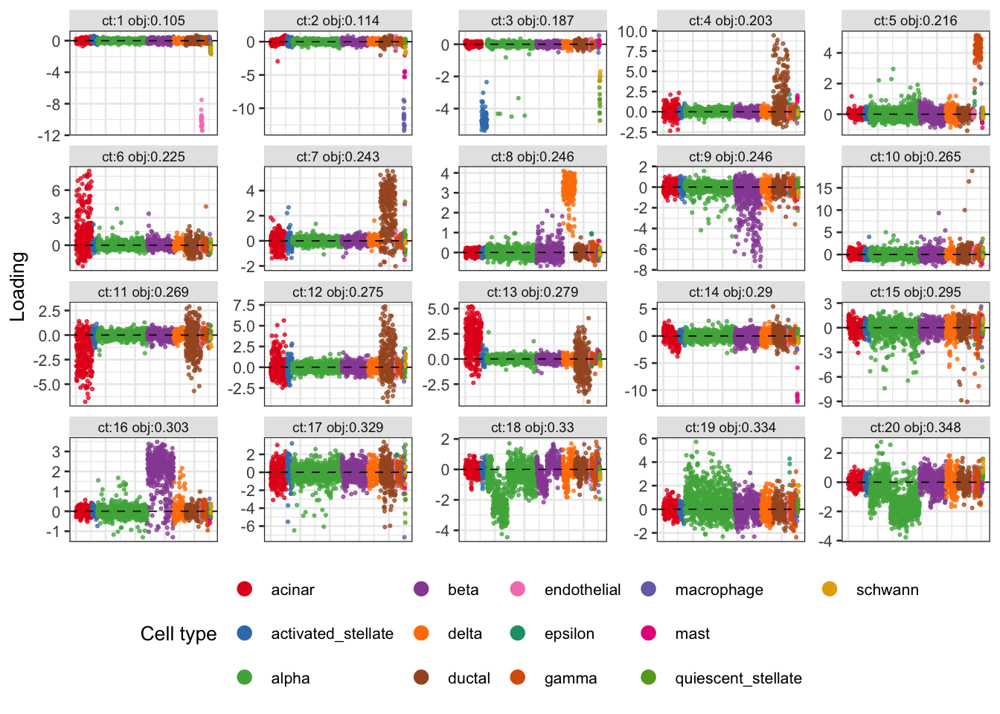
| Version | Author | Date |
|---|---|---|
| aae6c65 | Matthew Stephens | 2026-08-21 |
Tilted log-cosh: 1000 random starts
The tilted log-cosh (TLC) objective \(G(z) = \log\cosh(z) + \lambda z|z|\) is designed to be maximised and scores sparse binary sources more highly than standard log-cosh, which can fail for very skewed groups. Here we run 1000 random starts maximising the TLC objective with \(\lambda = 1\). At first I thought these looked good, but now I’m less sure: is it combining groups together that should not be combined? Eg combining delta with mast and macrophage seems potentially (probably?) wrong. Note that the group that showed the strongest minimum of log cosh now becomes the weakest maximum of this function. This makes me a bit uncomfortable.
set.seed(1)
n_iter = 50
W <- matrix(rnorm(nrow(U_aug) * n_starts), nrow(U_aug), n_starts)
W <- sweep(W, 2, sqrt(colSums(W^2)), "/")
for (i in seq_len(n_iter))
W <- fastica_update_tlc(U_aug, W)
Lhat_tlc <- t(U_aug) %*% W
Lhat_tlc.pc <- prune_and_count_cluster(Lhat_tlc)
plot_Lhat_maxima(Lhat_tlc.pc, obj_threshold = -Inf, obj_fn = objective_tlc)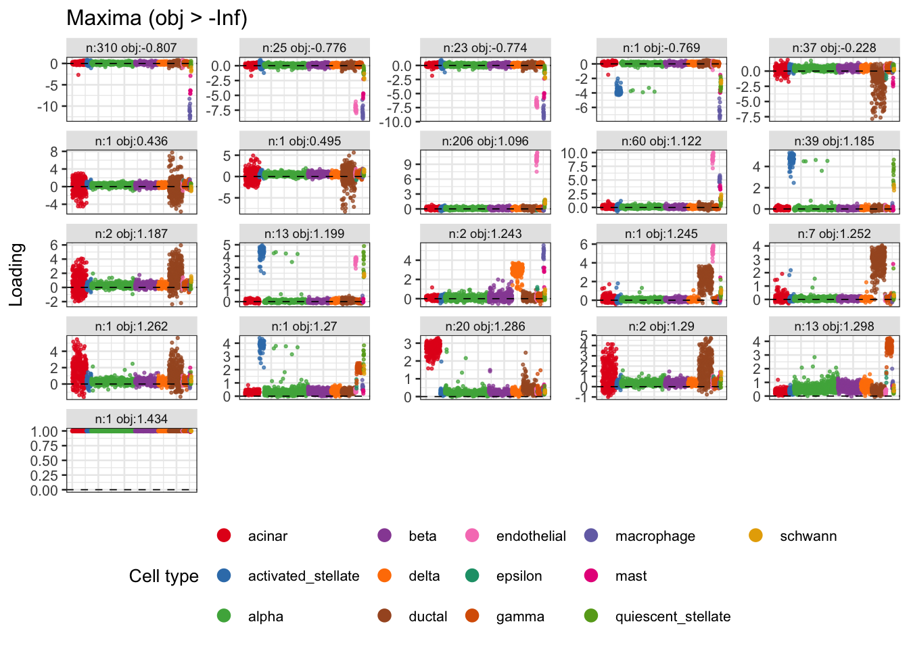
Tilted log-cosh: no intercept
Here I restrict tlc to zero-mean sources; I am hoping that this gets rid of any tendancy to combine sources.
set.seed(1)
n_iter = 50
W <- matrix(rnorm(nrow(U) * n_starts), nrow(U), n_starts)
W <- sweep(W, 2, sqrt(colSums(W^2)), "/")
for (i in seq_len(n_iter))
W <- fastica_update_tlc(U, W)
Lhat_tlc0 <- t(U) %*% W
Lhat_tlc0.pc <- prune_and_count_cluster(Lhat_tlc0)
plot_Lhat_maxima(Lhat_tlc0.pc, obj_threshold = -Inf, obj_fn = objective_tlc)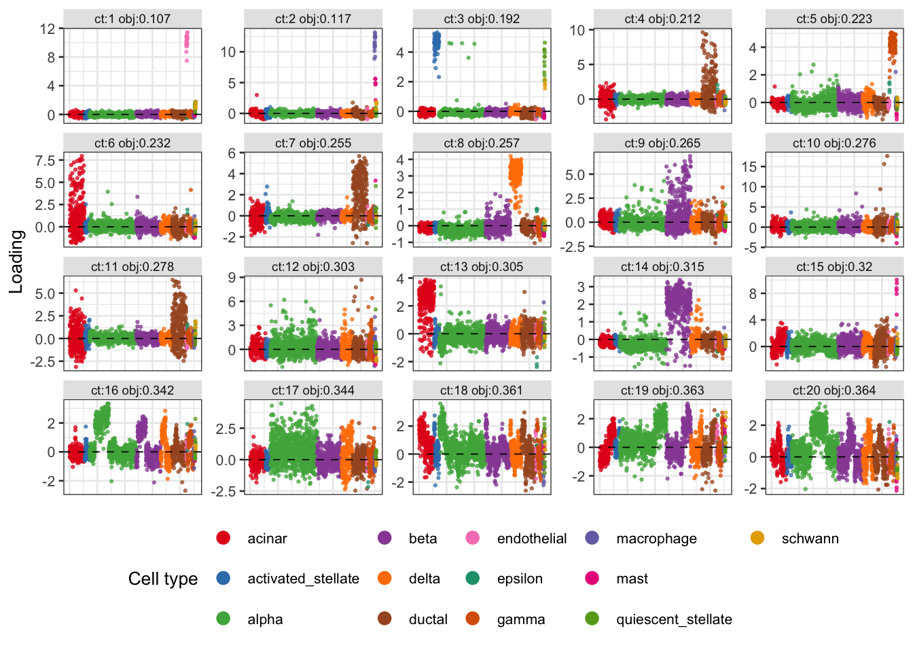
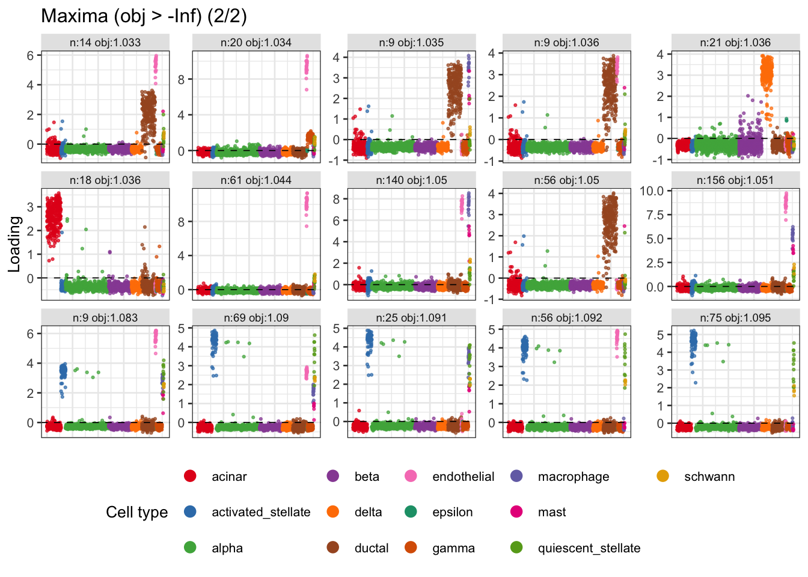
| Version | Author | Date |
|---|---|---|
| f6ed698 | Matthew Stephens | 2026-08-25 |
Tilt only (no log-cosh)
Here I remove the log cosh part of tlc and restrict to zero-mean sources.
set.seed(1)
n_iter = 50
W <- matrix(rnorm(nrow(U) * n_starts), nrow(U), n_starts)
W <- sweep(W, 2, sqrt(colSums(W^2)), "/")
for (i in seq_len(n_iter))
W <- fastica_update_skew(U, W)
Lhat_skew0 <- t(U) %*% W
Lhat_skew0.pc <- prune_and_count_cluster(Lhat_skew0)
plot_Lhat_maxima(Lhat_skew0.pc, obj_threshold = -Inf, obj_fn = objective_skew)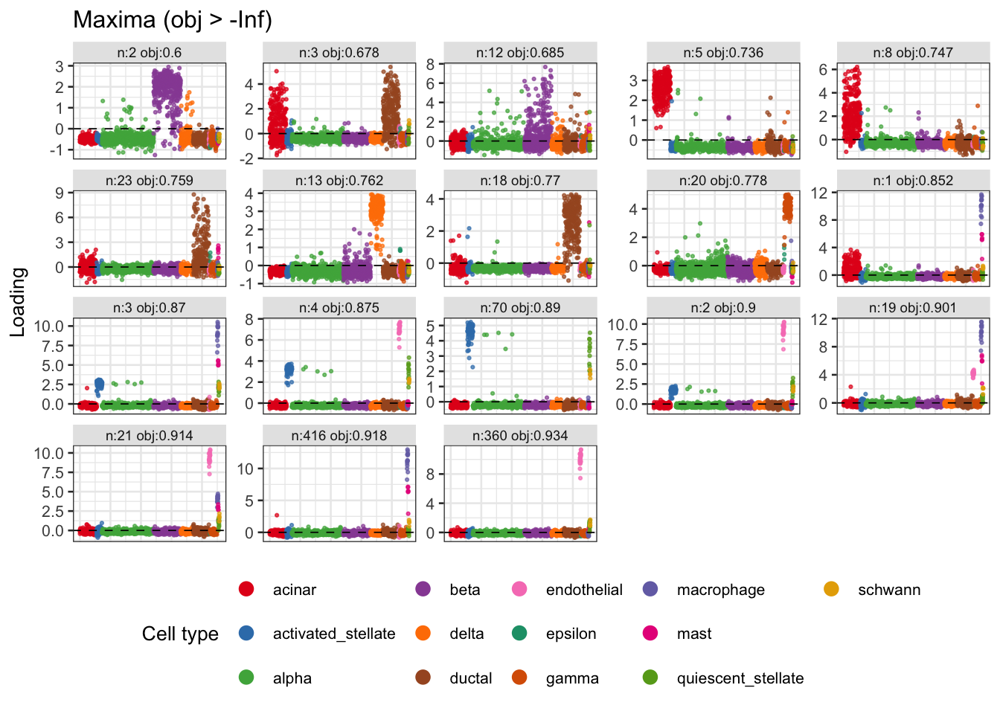
Tilted log-cosh: rank-r (r = 20)
Single rank-20 TLC run with symmetric orthogonalisation. These results actually look more promising: the combining of groups seems to have gone (?) and there are some possibly interesting hints of splits that group subsets of alpha cells with other related cells (beta, delta). Maybe 13 and 6 suggest two different subtypes of acinar cells. However, we have to be careful maybe about the fact that orthogonality has been forced here….
set.seed(1)
n_iter = 500
W_r_tlc <- polar(matrix(rnorm((n.comp + 1) * r), n.comp + 1, r))
for (i in seq_len(n_iter))
W_r_tlc <- fastica_update_tlc_rankr(U_aug, W_r_tlc)
Lhat_r_tlc <- t(U_aug) %*% W_r_tlc
plot_loadings_matrix(Lhat_r_tlc, obj_fn = objective_tlc)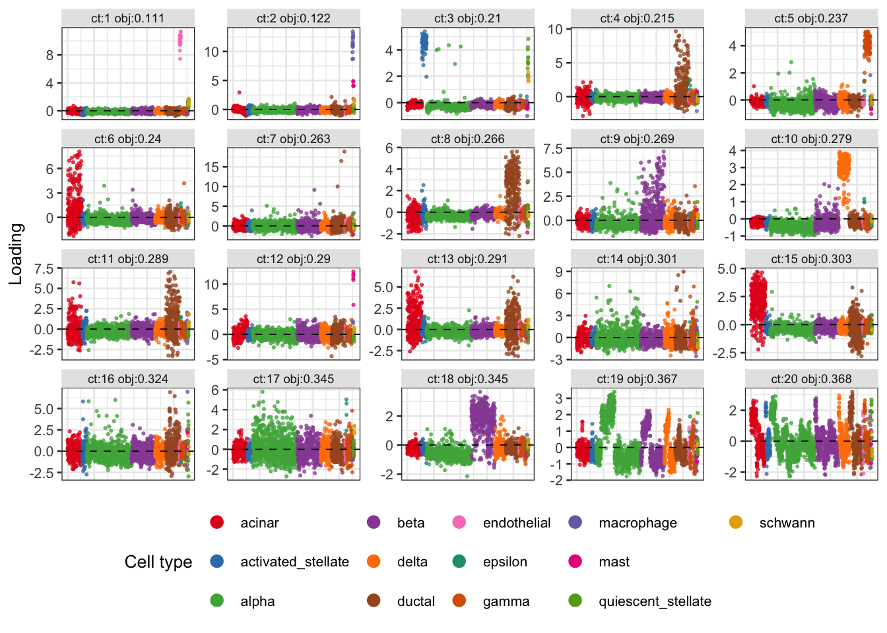
Log-Phi: 1000 random starts
The log-Phi contrast \(G(z) = \log\Phi(\alpha z)\) rewards large positive projections and is suited to one-sided sparse sources (cells that are “on” for a minority of observations). This is a monotonically increasing contrast function, so including an intercept here will give the trivial solution; here it is essential to remove the intercept (use U instead of U_aug).
All these results look pretty good. The contrast function was chosen to try to avoid combining groups, and indeed it seems to succeed here. The orthogonal results seem to find both specific cell types and some of the batch/donor effects revealed later. This contrast function deserves more investigation.
alpha = 1
set.seed(1)
n_iter = 50
W <- matrix(rnorm(nrow(U) * n_starts), nrow(U), n_starts)
W <- sweep(W, 2, sqrt(colSums(W^2)), "/")
for (i in seq_len(n_iter))
W <- fastica_update_logphi(U, W, alpha = 1)
Lhat_lp1 <- t(U) %*% W
Lhat_lp1.pc <- prune_and_count_cluster(Lhat_lp1)
plot_Lhat_maxima(Lhat_lp1.pc, obj_threshold = -Inf,
obj_fn = function(L) objective_logphi(L, alpha = 1))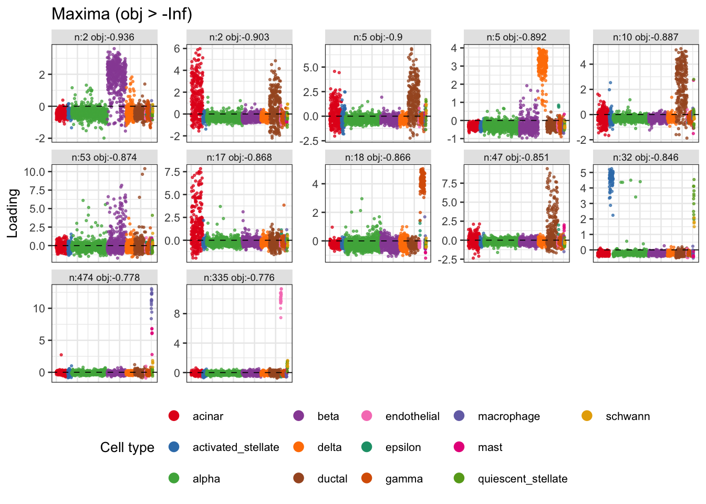
| Version | Author | Date |
|---|---|---|
| f6ed698 | Matthew Stephens | 2026-08-25 |
alpha = 2
set.seed(1)
n_iter = 50
W <- matrix(rnorm(nrow(U) * n_starts), nrow(U), n_starts)
W <- sweep(W, 2, sqrt(colSums(W^2)), "/")
for (i in seq_len(n_iter))
W <- fastica_update_logphi(U, W, alpha = 2)
Lhat_lp <- t(U) %*% W
Lhat_lp.pc <- prune_and_count_cluster(Lhat_lp)
plot_Lhat_maxima(Lhat_lp.pc, obj_threshold = -Inf, obj_fn = objective_logphi)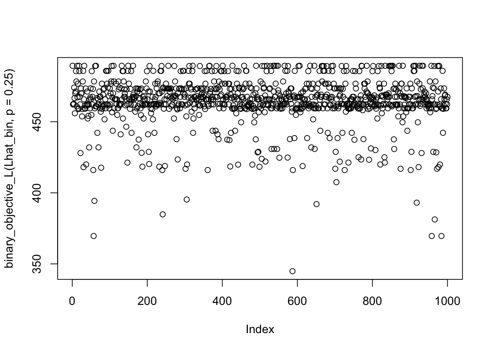
Log-Phi: rank-r (r = 20)
alpha = 1
set.seed(2)
n_iter = 500
W_r_lp1 <- polar(matrix(rnorm((n.comp) * r), n.comp, r))
for (i in seq_len(n_iter))
W_r_lp1 <- fastica_update_logphi_rankr(U, W_r_lp1, alpha = 1)
Lhat_r_lp1 <- t(U) %*% W_r_lp1
plot_loadings_matrix(Lhat_r_lp1, obj_fn = function(L) objective_logphi(L, alpha = 1))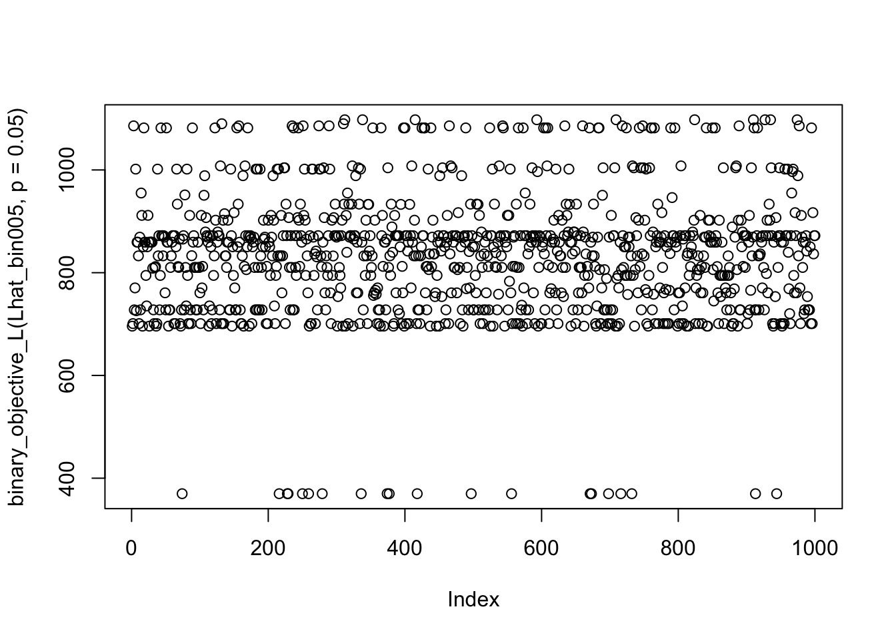
alpha = 2
set.seed(2)
n_iter = 500
W_r_lp <- polar(matrix(rnorm((n.comp) * r), n.comp, r))
for (i in seq_len(n_iter))
W_r_lp <- fastica_update_logphi_rankr(U, W_r_lp, alpha = 2)
Lhat_r_lp <- t(U) %*% W_r_lp
plot_loadings_matrix(Lhat_r_lp, obj_fn = objective_logphi)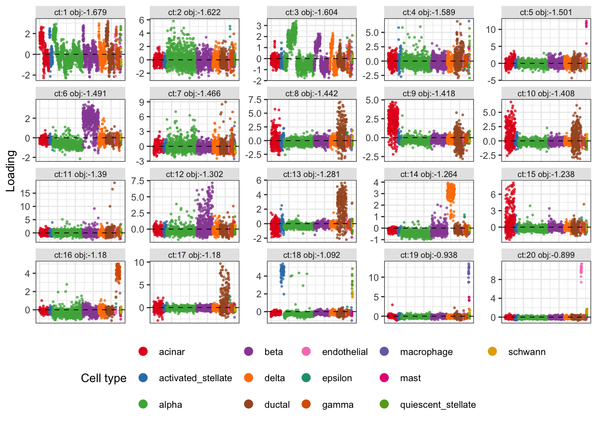
Binary ICA
Now I try the binary version of ICA (from stephens999/misc/fastica_asymmetric_04.Rmd).
# Newton update (ica-hessian approximation).
# U is (n.comp) x n (whitened data).
# W is (n.comp) x n_starts (one weight vector per column).
# P = t(U) %*% W is n x n_starts (source estimates).
# When p = 0.5 and c = s2 this is identical to standard fastica_update.
binary_newton_update <- function(U, W, p = 0.5, c = 2 / (1 + sqrt(5)), s2 = c) {
y1 <- sqrt((1 - p) / p)
y0 <- -sqrt(p / (1 - p))
ey0 <- c * y0
ey1 <- c * y1
P <- t(U) %*% W # n x n_starts
lp0 <- log(1 - p) + (2*P*ey0 - ey0^2) / (2*s2)
lp1 <- log(p) + (2*P*ey1 - ey1^2) / (2*s2)
m <- pmax(lp0, lp1)
e0 <- exp(lp0 - m); e1 <- exp(lp1 - m)
pi1 <- e1 / (e0 + e1) # n x n_starts
Mx <- (1 - pi1) * ey0 + pi1 * ey1 # posterior mean
Mpx <- pi1 * (1 - pi1) * (ey1 - ey0)^2 / s2 # dM/dx
W <- U %*% Mx - sweep(W, 2, colSums(Mpx), "*")
sweep(W, 2, sqrt(colSums(W^2)) + 1e-15, "/")
}
# Gradient update (no Hessian correction; equivalent to hessian = "none" in ebproj).
binary_gradient_update <- function(U, W, p = 0.5, c = 2 / (1 + sqrt(5)), s2 = c) {
y1 <- sqrt((1 - p) / p)
y0 <- -sqrt(p / (1 - p))
ey0 <- c * y0
ey1 <- c * y1
P <- t(U) %*% W # n x n_starts
lp0 <- log(1 - p) + (2*P*ey0 - ey0^2) / (2*s2)
lp1 <- log(p) + (2*P*ey1 - ey1^2) / (2*s2)
m <- pmax(lp0, lp1)
e0 <- exp(lp0 - m); e1 <- exp(lp1 - m)
pi1 <- e1 / (e0 + e1) # n x n_starts
Mx <- (1 - pi1) * ey0 + pi1 * ey1 # posterior mean
W <- U %*% Mx
sweep(W, 2, sqrt(colSums(W^2)) + 1e-15, "/")
}
# Objective J(W) = sum_i log Z(x_i, g, s2), returned as a vector of length n_starts.
# this is a rewrite of the original binary_objective to take the source (L) as its parameter,
# rather than U,W. This is just to make it work with the other code I had in this file. Possibly
# it would be better to code everything here to work with U,W instead of L?
binary_objective_L <- function(L, p = 0.5, c = 2 / (1 + sqrt(5)), s2 = c) {
y1 <- sqrt((1 - p) / p)
y0 <- -sqrt(p / (1 - p))
ey0 <- c * y0
ey1 <- c * y1
P <- L # n x n_starts
lp0 <- log(1 - p) + (2*P*ey0 - ey0^2) / (2*s2)
lp1 <- log(p) + (2*P*ey1 - ey1^2) / (2*s2)
m <- pmax(lp0, lp1)
colSums(log(exp(lp0 - m) + exp(lp1 - m)) + m) # length n_starts
}First try running with \(p=0.25\). It finds more different solutions, many of which combine interesting groups/cell types. A fundamental question I do not yet know the answer to is whether some of the maxima are still combining groups in a somewhat arbitrary way (like ICA). Note that I think all of these are maybe maxima (rather than minima) since I tried also running warm start from gradient steps and it produced similar results. Note also that I tried running without the intercept (replace U_aug with U) and the results were quite different, and maybe harder to parse - lots of combinations and fewer sparse groups.
set.seed(1)
n_iter = 50
W <- matrix(rnorm(nrow(U_aug) * n_starts), nrow(U_aug), n_starts)
W <- sweep(W, 2, sqrt(colSums(W^2)), "/")
for (i in seq_len(n_iter))
W <- binary_newton_update(U_aug, W, p=0.25)
Lhat_bin <- t(U_aug) %*% W
Lhat_bin.pc <- prune_and_count_cluster(Lhat_bin)
plot(binary_objective_L(Lhat_bin,p=0.25))
| Version | Author | Date |
|---|---|---|
| f6ed698 | Matthew Stephens | 2026-08-25 |
plot_Lhat_maxima(Lhat_bin.pc, obj_threshold = -Inf, obj_fn = function(L) binary_objective_L(L, p = 0.25))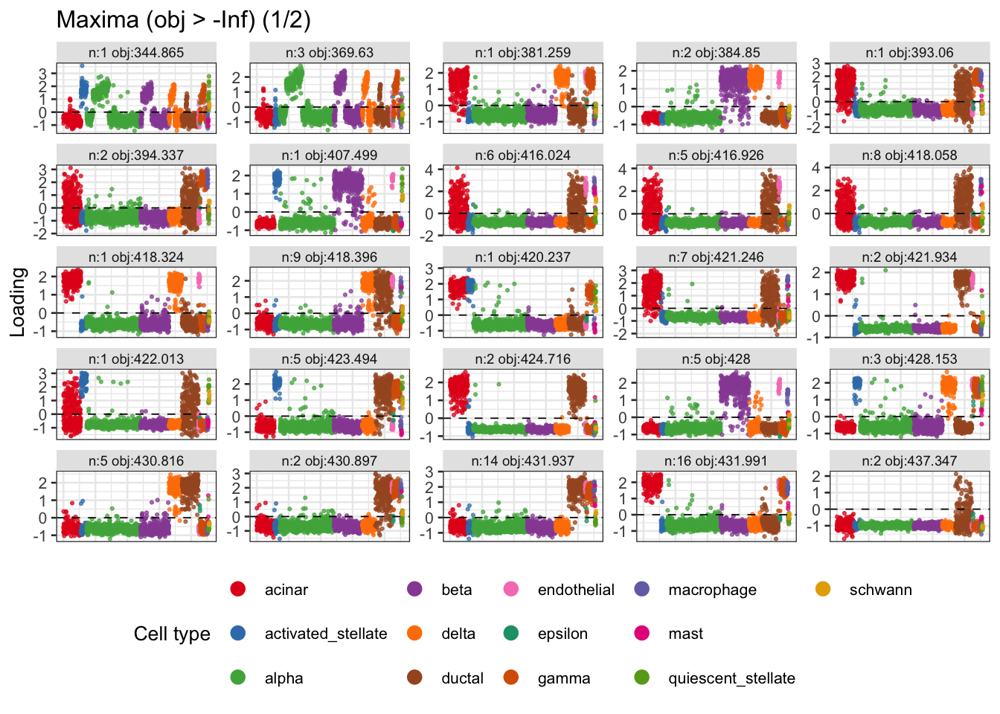
| Version | Author | Date |
|---|---|---|
| f6ed698 | Matthew Stephens | 2026-08-25 |
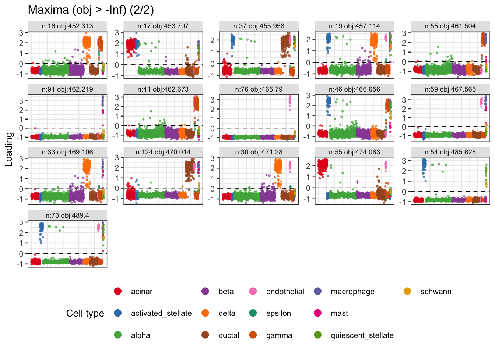
| Version | Author | Date |
|---|---|---|
| f6ed698 | Matthew Stephens | 2026-08-25 |
Now try running with \(p=0.05\).
set.seed(1)
n_iter = 50
W <- matrix(rnorm(nrow(U_aug) * n_starts), nrow(U_aug), n_starts)
W <- sweep(W, 2, sqrt(colSums(W^2)), "/")
for (i in seq_len(n_iter))
W <- binary_newton_update(U_aug, W, p=0.05)
Lhat_bin005 <- t(U_aug) %*% W
Lhat_bin005.pc <- prune_and_count_cluster(Lhat_bin005)
plot(binary_objective_L(Lhat_bin005, p=0.05))
| Version | Author | Date |
|---|---|---|
| f6ed698 | Matthew Stephens | 2026-08-25 |
plot_Lhat_maxima(Lhat_bin005.pc, obj_threshold = -Inf, obj_fn = function(L) binary_objective_L(L, p = 0.05))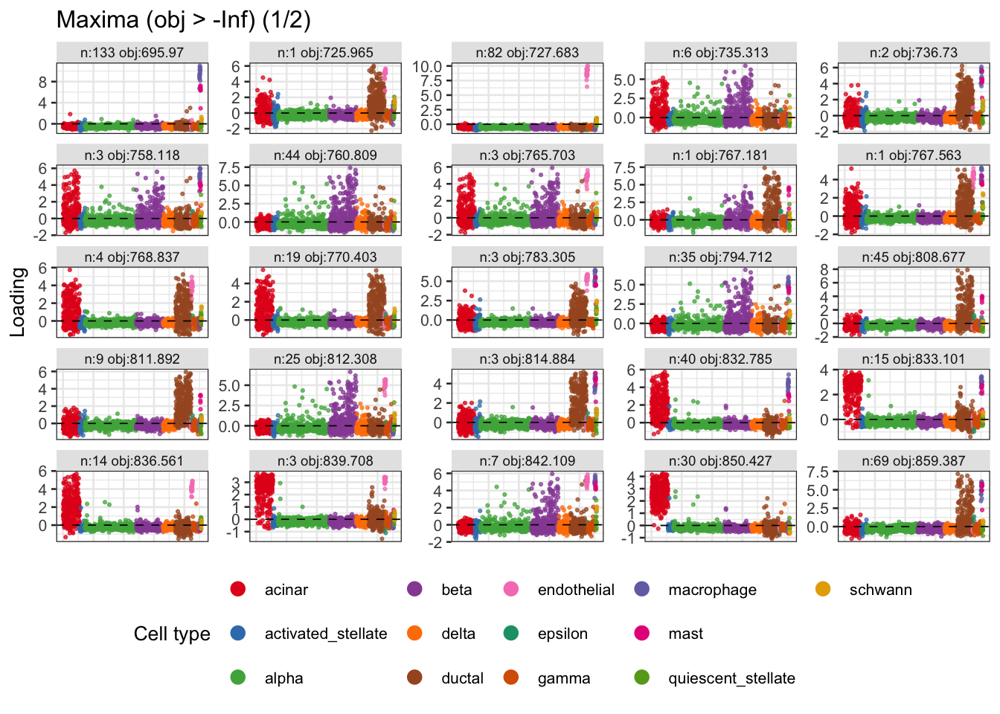
| Version | Author | Date |
|---|---|---|
| f6ed698 | Matthew Stephens | 2026-08-25 |
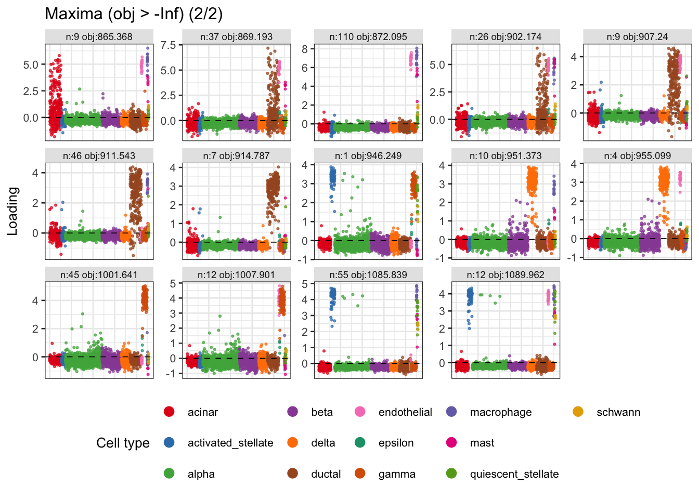
| Version | Author | Date |
|---|---|---|
| f6ed698 | Matthew Stephens | 2026-08-25 |
EBproj from binary ICA solutions
Here I take the binary ICA solutions found with \(p=0.25\) above and use them to initialise the EBproj method (from misc/fastica_asymmetric_03.Rmd). EBproj is a Newton-based method that optimises an empirical Bayes projection objective with a binary prior; unlike binary ICA it also estimates \(\tau\) (a precision parameter) and the prior parameters.
Each binary ICA loading \(\hat{L}_j\) lives in the \(n\)-dimensional observation space. To recover an approximate weight vector in the \(k\)-dimensional whitened space I project: \(\hat{w}_j = U \hat{L}_j\) where \(U\) is the \(k \times n\) whitened data matrix (no intercept row). That vector is passed to ebproj_init as the starting \(w\); EBproj then refines it.
# Helper functions for the binary prior (from fastica_asymmetric_03.Rmd)
log_Z_binary = function(x, y_0, y_1, p, sigma2) {
# Use -(x-y_j)^2/(2*sigma2) <= 0 to avoid overflow; add back x^2/(2*sigma2) at the end
lp0 = log(1 - p) - (x - y_0)^2 / (2*sigma2)
lp1 = log(p) - (x - y_1)^2 / (2*sigma2)
m = pmax(lp0, lp1)
log(exp(lp0 - m) + exp(lp1 - m)) + m + x^2 / (2*sigma2)
}
post_prob1 = function(x, y_0, y_1, p, sigma2) {
# x^2/(2*sigma2) cancels in the ratio so omit it
lp0 = log(1 - p) - (x - y_0)^2 / (2*sigma2)
lp1 = log(p) - (x - y_1)^2 / (2*sigma2)
m = pmax(lp0, lp1)
e0 = exp(lp0 - m); e1 = exp(lp1 - m)
e1 / (e0 + e1)
}
post_mean_binary = function(x, y_0, y_1, p, sigma2) {
pi1 = post_prob1(x, y_0, y_1, p, sigma2)
(1 - pi1)*y_0 + pi1*y_1
}
post_mean_deriv_binary = function(x, y_0, y_1, p, sigma2) {
pi1 = post_prob1(x, y_0, y_1, p, sigma2)
pi1 * (1 - pi1) * (y_1 - y_0)^2 / sigma2
}
ebproj_init = function(U, b=0, c=1, tau=NULL, sigma2=NULL, w=NULL, d.init=NULL) {
n = nrow(U); k = ncol(U); nu = n - k - 2*b
if (!is.null(tau) && !is.null(sigma2)) stop("specify at most one of tau and sigma2")
if (is.null(tau) && is.null(sigma2)) tau = 1
if (is.null(sigma2)) sigma2 = n / (nu * tau)
if (is.null(tau)) tau = n / (nu * sigma2)
if (is.null(d.init)) d.init = rep(n, k)
d = rep(n, k)
if (is.null(w)) w = sqrt(d.init) * rnorm(k)
w = w / sqrt(sum(d * w^2))
list(U=U, d=d, b=b, n=n, k=k, nu=nu, sigma2=sigma2, w=w, c=c,
y_0=-1, y_1=1, p=0.5, objective=NULL, tau=tau)
}
ebproj_calc_x = function(fit) as.vector(fit$U %*% (fit$d * fit$w))
ebproj_objective = function(fit) {
ey0 = fit$c * fit$y_0; ey1 = fit$c * fit$y_1
x = ebproj_calc_x(fit)
J = sum(log_Z_binary(x, ey0, ey1, fit$p, fit$sigma2))
(fit$nu/2) * (log(fit$tau) - fit$tau + 1) + J
}
ebproj_update_w = function(fit, hessian="ica", eps=1e-6) {
ey0 = fit$c * fit$y_0; ey1 = fit$c * fit$y_1
x = ebproj_calc_x(fit)
Mx = post_mean_binary(x, ey0, ey1, fit$p, fit$sigma2)
Mpx = post_mean_deriv_binary(x, ey0, ey1, fit$p, fit$sigma2)
w_target = as.vector(t(fit$U) %*% Mx)
S_diag = as.vector((fit$U^2) %*% fit$d)
H_diag = switch(hessian,
diag = { c_j = as.vector(t(fit$U^2) %*% Mpx); c_j * fit$d },
trace = { c_t = sum(Mpx * S_diag) / sum(fit$d); c_t * fit$d },
iso = { c_i = sum(Mpx * S_diag) / fit$k; rep(c_i, fit$k) },
ica = { c_c = sum(Mpx); rep(c_c, fit$k) },
none = rep(0, fit$k),
stop("hessian must be 'diag', 'trace', 'iso', 'ica', or 'none'")
)
lambda = max(sum(fit$d * fit$w * w_target), max(H_diag) + eps)
w_new = (w_target - H_diag * fit$w) / (lambda - H_diag)
scale = sqrt(sum(fit$d * w_new^2))
if (scale < 1e-10) w_new = w_target # fall back to gradient step if Newton collapses
fit$w = w_new / sqrt(sum(fit$d * w_new^2))
fit
}
ebproj_update_g = function(fit) {
ey0 = fit$c * fit$y_0; ey1 = fit$c * fit$y_1
x = ebproj_calc_x(fit)
pi1 = post_prob1(x, ey0, ey1, fit$p, fit$sigma2)
pi0 = 1 - pi1
fit$p = mean(pi1)
s0 = sum(pi0); s1 = sum(pi1)
y0_new = if (s0 > 1e-10) sum(pi0 * x) / s0 else fit$c * fit$y_0
y1_new = if (s1 > 1e-10) sum(pi1 * x) / s1 else fit$c * fit$y_1
var_g = (1 - fit$p) * y0_new^2 + fit$p * y1_new^2 -
((1 - fit$p) * y0_new + fit$p * y1_new)^2
if (var_g < 1e-10) return(fit) # degenerate posterior; keep current g
fit$c = sqrt(var_g)
fit$y_0 = y0_new / fit$c
fit$y_1 = y1_new / fit$c
fit
}
ebproj_update_g0 = function(fit) {
x = ebproj_calc_x(fit)
obj_p = function(logit_p) {
pp = 1 / (1 + exp(-logit_p))
y1 = sqrt((1 - pp) / pp); y0 = -sqrt(pp / (1 - pp))
sum(log_Z_binary(x, fit$c * y0, fit$c * y1, pp, fit$sigma2))
}
res = optimize(obj_p, c(-5, 5), maximum=TRUE)
pp = 1 / (1 + exp(-res$maximum))
fit$p = pp
fit$y_1 = sqrt((1 - pp) / pp)
fit$y_0 = -sqrt(pp / (1 - pp))
fit
}
ebproj_update_tau = function(fit) {
ey0 = fit$c * fit$y_0; ey1 = fit$c * fit$y_1
x = ebproj_calc_x(fit)
pi1 = post_prob1(x, ey0, ey1, fit$p, fit$sigma2)
vbar = post_mean_binary(x, ey0, ey1, fit$p, fit$sigma2)
Uv = as.vector(t(fit$U) %*% vbar)
Uq = sum((1 - pi1) * ey0^2 + pi1 * ey1^2)
rho = sum(fit$d * Uv^2) / (fit$n * Uq)
rho = min(rho, 1 - 1/fit$n) # cap tau at n to avoid numerical blow-up
fit$tau = 1 / (1 - rho)
fit$sigma2 = fit$n / (fit$nu * fit$tau)
fit
}
ebproj_fit = function(fit, hessian="ica", fix_w=FALSE, g_update="g",
fix_tau=FALSE, max_iter=200, tol=1e-6, verbose=FALSE) {
fit$objective = ebproj_objective(fit)
for (iter in seq_len(max_iter)) {
if (!fix_tau) fit = ebproj_update_tau(fit)
fit = switch(g_update,
g = ebproj_update_g(fit),
g0 = ebproj_update_g0(fit),
none = fit,
stop("g_update must be 'g', 'g0', or 'none'")
)
if (!fix_w) fit = ebproj_update_w(fit, hessian=hessian)
obj_new = ebproj_objective(fit)
if (verbose) cat(sprintf("iter %3d obj=%.4f tau=%.2f p=%.3f c=%.4f\n",
iter, obj_new, fit$tau, fit$p, fit$c))
if (!is.null(fit$objective) && abs(obj_new - fit$objective) < tol) {
fit$objective = obj_new; break
}
fit$objective = obj_new
}
fit$iter = iter
if (iter == max_iter) warning("ebproj_fit reached max_iter")
fit
}Now run EBproj from each pruned binary ICA (\(p=0.25\)) solution. I use the two-stage update: first optimise the constrained shape parameter \(p\) (with mean-0, unit-variance \(g_0\)) to find the right sparsity level, then switch to the unconstrained update to refine further.
U_eb <- Y.svd$u[, 1:n.comp] # n x n.comp: orthonormal columns, as ebproj expects
b_eb <- n.comp / 2
n_pruned <- ncol(Lhat_bin.pc$pruned_matrix)
fits_eb <- vector("list", n_pruned)
for (j in seq_len(n_pruned)) {
L_col <- Lhat_bin.pc$pruned_matrix[, j]
w_init <- t(U_eb) %*% L_col # n.comp x 1
fit <- ebproj_init(U_eb, b=b_eb, w=w_init)
fit <- suppressWarnings(ebproj_fit(fit, g_update="g0", max_iter=200))
fit <- suppressWarnings(ebproj_fit(fit, g_update="g", max_iter=200))
fits_eb[[j]] <- fit
}
Lhat_eb <- sapply(fits_eb, ebproj_calc_x) # n x n_pruned
obj_eb <- sapply(fits_eb, `[[`, "objective")
plot_loadings_matrix(Lhat_eb, label_prefix="eb:",
obj_fn=function(L) obj_eb,
si=sample_info)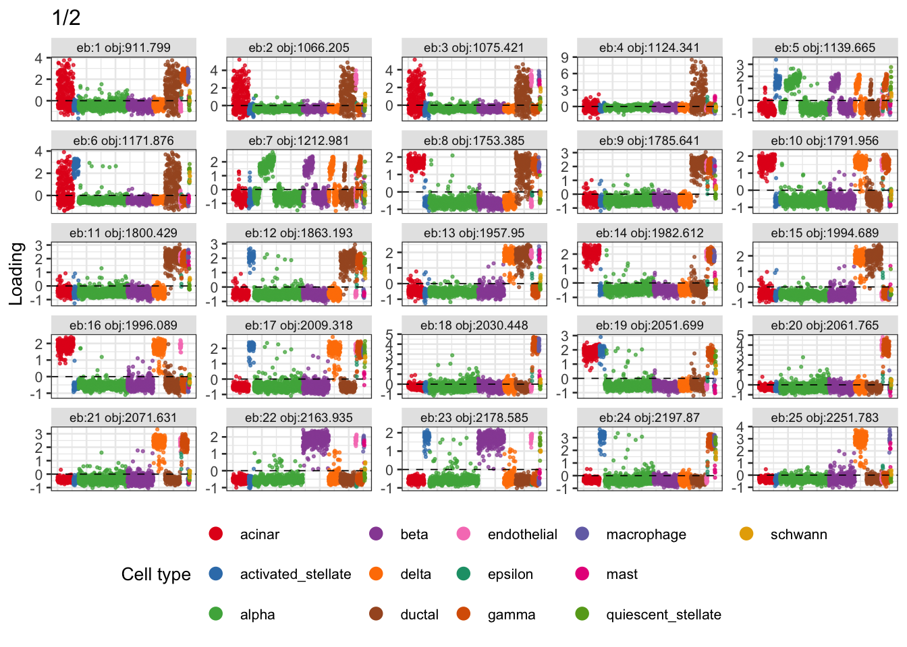
| Version | Author | Date |
|---|---|---|
| eb26677 | Matthew Stephens | 2026-08-23 |
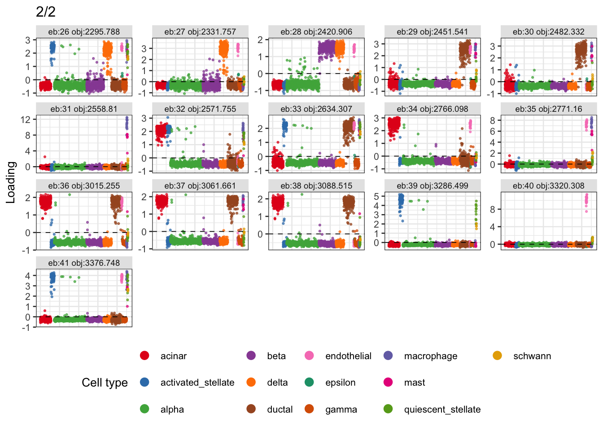
| Version | Author | Date |
|---|---|---|
| eb26677 | Matthew Stephens | 2026-08-23 |
EBproj from binary ICA solutions (p=0.05)
Same as above but initialised from the \(p=0.05\) binary ICA solutions.
n_pruned005 <- ncol(Lhat_bin005.pc$pruned_matrix)
fits_eb005 <- vector("list", n_pruned005)
for (j in seq_len(n_pruned005)) {
L_col <- Lhat_bin005.pc$pruned_matrix[, j]
w_init <- t(U_eb) %*% L_col
fit <- ebproj_init(U_eb, b=b_eb, w=w_init)
fit <- suppressWarnings(ebproj_fit(fit, g_update="g0", max_iter=200))
fit <- suppressWarnings(ebproj_fit(fit, g_update="g", max_iter=200))
fits_eb005[[j]] <- fit
}
Lhat_eb005 <- sapply(fits_eb005, ebproj_calc_x)
obj_eb005 <- sapply(fits_eb005, `[[`, "objective")
plot_loadings_matrix(Lhat_eb005, label_prefix="eb005:",
obj_fn=function(L) obj_eb005,
si=sample_info)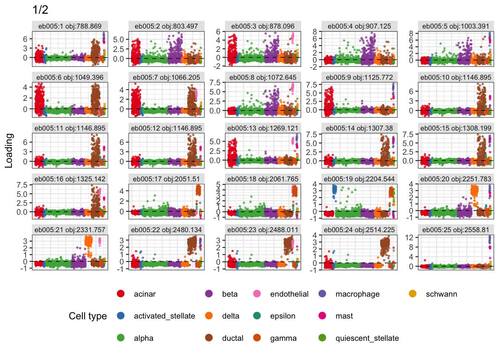
| Version | Author | Date |
|---|---|---|
| eb26677 | Matthew Stephens | 2026-08-23 |
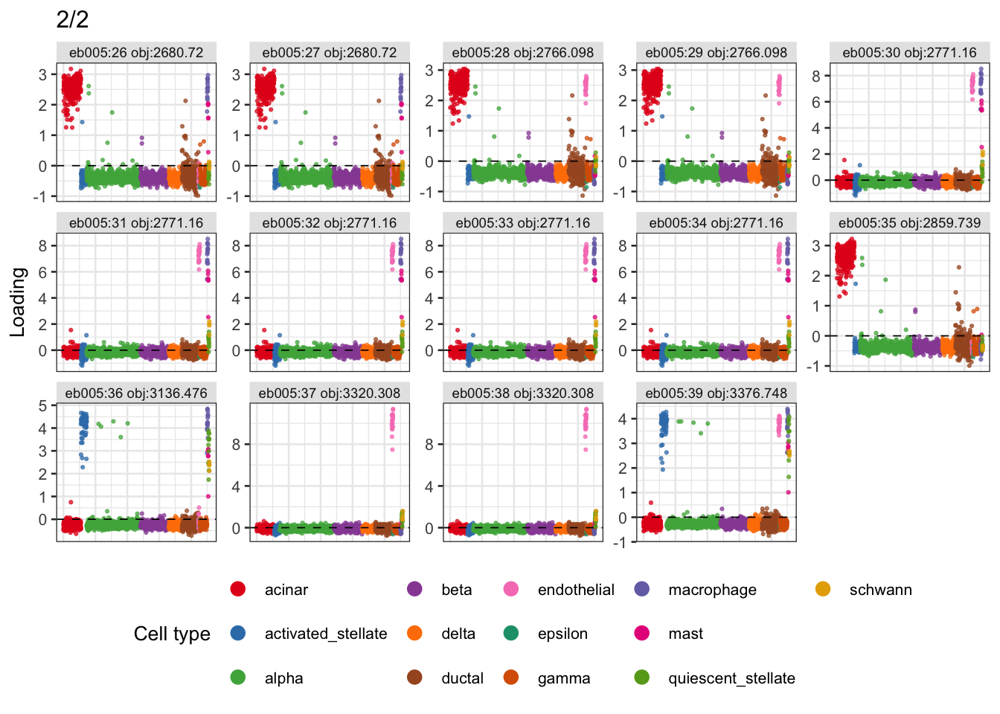
| Version | Author | Date |
|---|---|---|
| eb26677 | Matthew Stephens | 2026-08-23 |
EBproj: 1000 random starts (goldenplus)
Here I run EBproj 1000 times from random starting points using the “goldenplus” strategy: first fix \(\tau\) and optimise the constrained prior shape (\(g_0\) update), then relax to full updates. This is analogous to the strategy used in the simulation comparisons in fastica_asymmetric_03.Rmd.
set.seed(1)
c_golden <- 2 / (1 + sqrt(5))
n_starts_eb <- 1000
fits_gp <- vector("list", n_starts_eb)
for (i in seq_len(n_starts_eb)) {
fit.init <- ebproj_init(U_eb, b=b_eb, c=c_golden, sigma2=c_golden)
fit_golden <- suppressWarnings(ebproj_fit(fit.init, fix_tau=TRUE, g_update="g0", max_iter=200))
fits_gp[[i]] <- suppressWarnings(ebproj_fit(fit_golden, max_iter=200))
}
Lhat_gp <- sapply(fits_gp, ebproj_calc_x)
obj_gp <- sapply(fits_gp, `[[`, "objective")
Lhat_gp.pc <- prune_and_count_cluster(Lhat_gp)
lhat_ggplot(Lhat_gp.pc, idx=rep(TRUE, ncol(Lhat_gp.pc$pruned_matrix)),
title="EBproj goldenplus (multiple random starts)",
obj_fn=function(L) obj_gp[Lhat_gp.pc$kept_indices],
si=sample_info)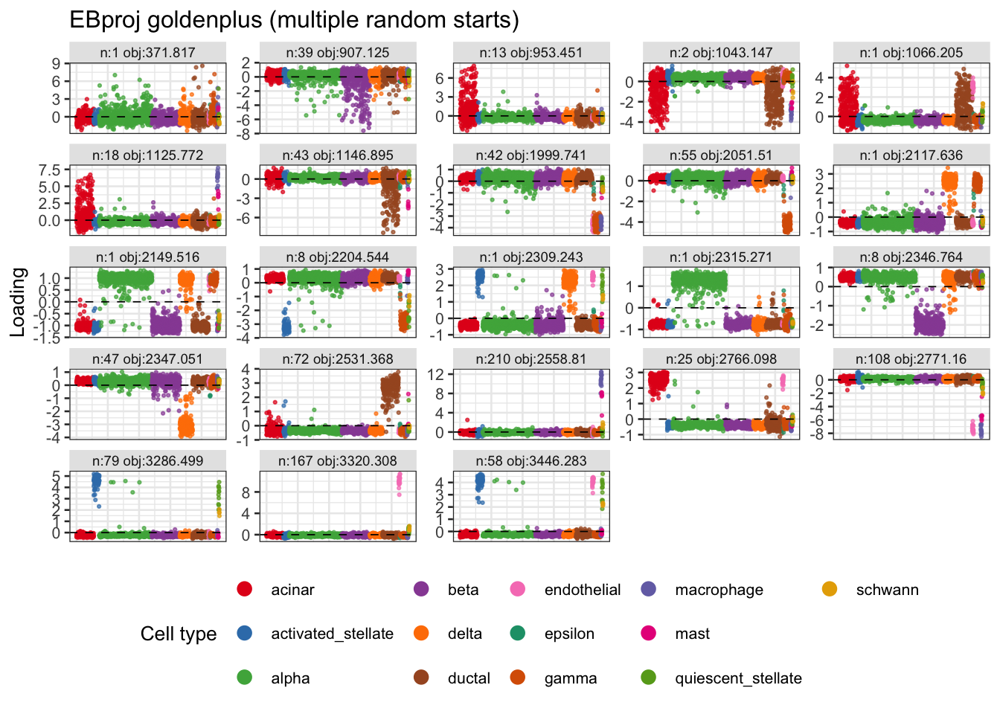
| Version | Author | Date |
|---|---|---|
| eb26677 | Matthew Stephens | 2026-08-23 |
EBproj: 1000 goldenplus starts in 10 PCs, refitted in 25 PCs
Here I run 1000 goldenplus fits using only the first 10 PCs, then use each resulting weight vector as a starting point for a fresh 25-PC EBproj fit. The 15 extra coordinates in \(w\) are initialised to zero, so the starting direction lies entirely in the first 10-PC subspace and the full fit is free to adjust in all 25 directions.
n_comp10 <- 10
U_eb10 <- Y.svd$u[, 1:n_comp10] # n x 10
b_eb10 <- n_comp10 / 2
set.seed(3)
n_starts_10 <- 1000
fits_gp10 <- vector("list", n_starts_10)
for (i in seq_len(n_starts_10)) {
fit.init <- ebproj_init(U_eb10, b=b_eb10, c=c_golden, sigma2=c_golden)
fit_golden <- suppressWarnings(ebproj_fit(fit.init, fix_tau=TRUE, g_update="g0", max_iter=200))
fits_gp10[[i]] <- suppressWarnings(ebproj_fit(fit_golden, max_iter=200))
}
obj_gp10 <- sapply(fits_gp10, ebproj_objective)
Lhat_gp10 <- sapply(fits_gp10, ebproj_calc_x)
Lhat_gp10.pc <- prune_and_count_cluster(Lhat_gp10)
# Refit each clustered representative in 25 PCs, padding w with zeros
n_rep10 <- ncol(Lhat_gp10.pc$pruned_matrix)
fits_25 <- vector("list", n_rep10)
for (j in seq_len(n_rep10)) {
orig_fit <- fits_gp10[[Lhat_gp10.pc$kept_indices[j]]]
w_init <- c(orig_fit$w, rep(0, n.comp - n_comp10)) # pad to length 25
fit.init <- ebproj_init(U_eb, b=b_eb, c=orig_fit$c, sigma2=1/orig_fit$tau, w=w_init)
fit_golden <- suppressWarnings(ebproj_fit(fit.init, fix_tau=TRUE, g_update="g0", max_iter=200))
fits_25[[j]] <- suppressWarnings(ebproj_fit(fit_golden, max_iter=200))
}
Lhat_gp10_25 <- sapply(fits_25, ebproj_calc_x)
obj_gp10_25 <- sapply(fits_25, ebproj_objective)
Lhat_gp10_25.pc <- prune_and_count_cluster(Lhat_gp10_25)
lhat_ggplot(Lhat_gp10_25.pc, idx=rep(TRUE, ncol(Lhat_gp10_25.pc$pruned_matrix)),
title="EBproj: 10-PC goldenplus → 25-PC refit",
obj_fn=function(L) obj_gp10_25[Lhat_gp10_25.pc$kept_indices],
si=sample_info)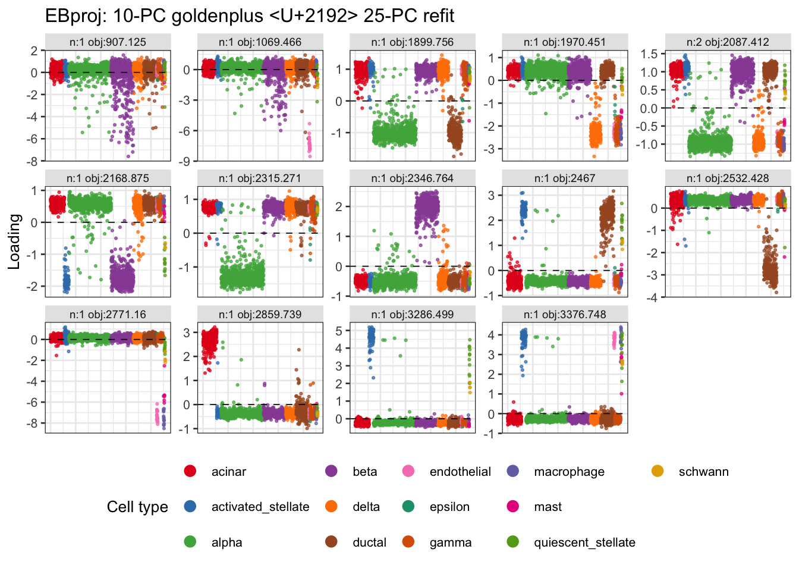
| Version | Author | Date |
|---|---|---|
| f6ed698 | Matthew Stephens | 2026-08-25 |
Orthogonal EBproj approaches
In this section I try multiple approaches that interleave EBproj updates with orthogonalization approaches (eg polar decomposition or Gram Schmidt). These are all very exploratory - I have not thought hard about the validity of these schemes, simply implementing them to see what happens.
EBproj rank-r orthogonalized goldenplus
Here I find \(r=20\) components simultaneously by interleaving the per-component EBproj updates with a polar-decomposition orthogonalisation of the weight matrix \(W = [w_1, \ldots, w_r]\) (analogous to fastica_update_rankr). The two-phase goldenplus strategy is preserved: first warm up with \(\tau\) fixed and only the constrained \(g_0\) update, then release to full updates.
After each phase’s iterations the polar step is polar(W) / sqrt(n): polar returns orthonormal columns (Euclidean norm 1), dividing by \(\sqrt{n}\) restores the ebproj constraint \(w'Dw = 1\) (since \(D = nI\)).
Note that because the objective functions are different for each factor, the symmetric orthogonalization is a bit weird, and maybe not a good idea(?) This motivates the following section where we use Gram-Schmidt instead, which is more of a “deflationary” approach and might be more appropriate here.
set.seed(1)
r_eb <- 20
n_warmup <- 50
n_full <- 100
# Initialise r fits with c_golden and independent random w
fits_rankr <- lapply(seq_len(r_eb), function(j)
ebproj_init(U_eb, b=b_eb, c=c_golden, sigma2=c_golden))
polar_reorth <- function(fits) {
W <- sapply(fits, `[[`, "w") # k x r
W <- polar(W) / sqrt(fits[[1]]$n) # orthonormal cols, w'Dw = 1
for (j in seq_len(length(fits))) fits[[j]]$w <- W[, j]
fits
}
# Phase 0: gradient step (no Hessian), fix tau — steers toward maxima
# g0 update comes AFTER polar so hyperparameters are always in sync with current w
for (iter in seq_len(n_warmup)) {
for (j in seq_len(r_eb))
fits_rankr[[j]] <- ebproj_update_w(fits_rankr[[j]], hessian="none")
fits_rankr <- polar_reorth(fits_rankr)
for (j in seq_len(r_eb))
fits_rankr[[j]] <- ebproj_update_g0(fits_rankr[[j]])
}
# Phase 1: Newton (ICA Hessian), fix tau
for (iter in seq_len(n_warmup)) {
for (j in seq_len(r_eb))
fits_rankr[[j]] <- ebproj_update_w(fits_rankr[[j]])
fits_rankr <- polar_reorth(fits_rankr)
for (j in seq_len(r_eb))
fits_rankr[[j]] <- ebproj_update_g0(fits_rankr[[j]])
}
# Phase 2: full updates — g and tau update AFTER polar to stay in sync
for (iter in seq_len(n_full)) {
for (j in seq_len(r_eb))
fits_rankr[[j]] <- ebproj_update_w(fits_rankr[[j]])
fits_rankr <- polar_reorth(fits_rankr)
for (j in seq_len(r_eb)) {
fits_rankr[[j]] <- suppressWarnings(ebproj_update_tau(fits_rankr[[j]]))
fits_rankr[[j]] <- ebproj_update_g(fits_rankr[[j]])
}
}
Lhat_rankr <- sapply(fits_rankr, ebproj_calc_x) # n x r
obj_rankr <- sapply(fits_rankr, ebproj_objective)
plot_loadings_matrix(Lhat_rankr, label_prefix="er:",
obj_fn=function(L) obj_rankr,
si=sample_info)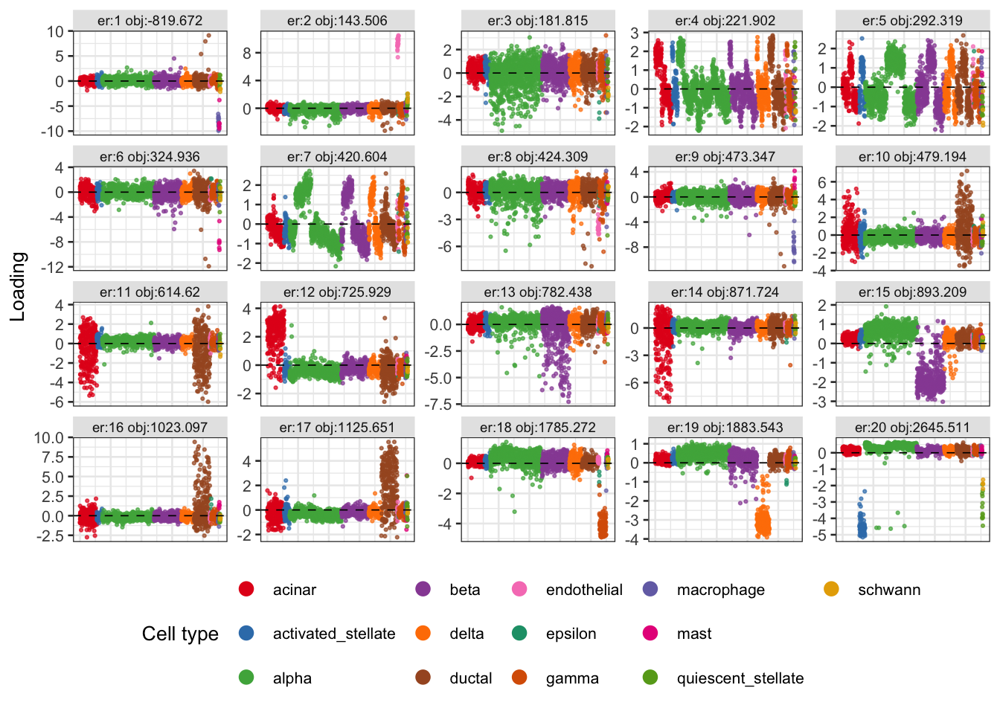
| Version | Author | Date |
|---|---|---|
| 943b6e3 | Matthew Stephens | 2026-08-24 |
Results look ok, but one of the objectives is very negative which seems odd. So I followed up the above with iterations that do not orthogonalize to see how results change. The results change a lot, but still look sensible (maybe more sensible?) But some results end up at the same solution (which may be saying something about whether the previous results really make sense).
# Phase 2: full updates — g and tau update AFTER polar to stay in sync
for (iter in seq_len(n_full)) {
for (j in seq_len(r_eb))
fits_rankr[[j]] <- ebproj_update_w(fits_rankr[[j]])
#fits_rankr <- polar_reorth(fits_rankr)
for (j in seq_len(r_eb)) {
fits_rankr[[j]] <- suppressWarnings(ebproj_update_tau(fits_rankr[[j]]))
fits_rankr[[j]] <- ebproj_update_g(fits_rankr[[j]])
}
}
Lhat_rankr <- sapply(fits_rankr, ebproj_calc_x) # n x r
obj_rankr <- sapply(fits_rankr, ebproj_objective)
plot_loadings_matrix(Lhat_rankr, label_prefix="er:",
obj_fn=function(L) obj_rankr,
si=sample_info)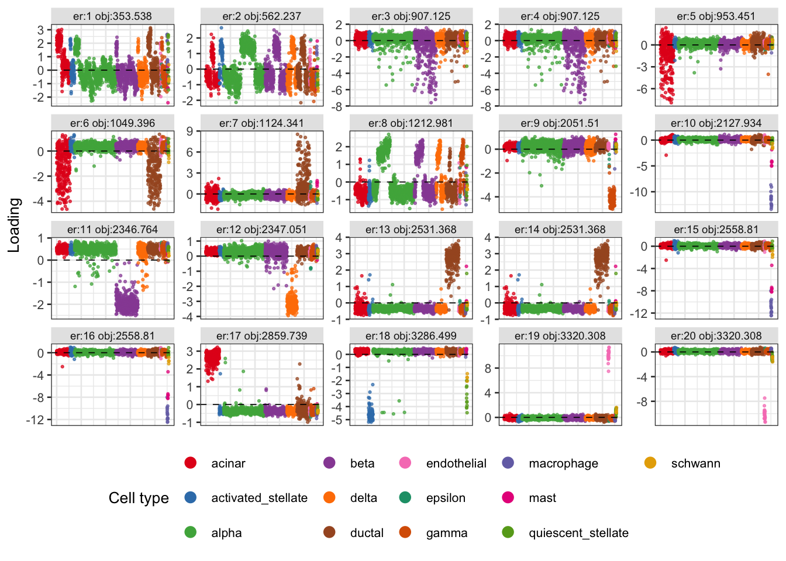
| Version | Author | Date |
|---|---|---|
| f6ed698 | Matthew Stephens | 2026-08-25 |
EBproj rank-r orthogonalized goldenplus with Gram-Schmidt
Same three-phase structure as the polar version, but each orthogonalisation step uses Gram-Schmidt rather than polar decomposition. The key difference: components are processed in order of decreasing objective value, so the highest-objective component is kept exactly, and each subsequent component has all preceding components projected out of it. This is a deflation-style procedure — the best-found direction is protected, and later components are forced to be orthogonal to it — whereas polar spreads the rotation evenly across all columns.
set.seed(1)
r_gs <- 20
n_warmup_gs <- 50
n_full_gs <- 100
fits_rankr_gs <- lapply(seq_len(r_gs), function(j)
ebproj_init(U_eb, b=b_eb, c=c_golden, sigma2=c_golden))
gs_reorth <- function(fits) {
n <- fits[[1]]$n
objs <- sapply(fits, ebproj_objective)
ord <- order(objs, decreasing = TRUE) # best first
# Work in unit-Euclidean-norm space: v = sqrt(n)*w (w'Dw=1 => ||v||=1)
V <- sqrt(n) * sapply(fits, `[[`, "w") # k x r
V <- V[, ord, drop = FALSE] # sorted by decreasing objective
for (j in seq_len(ncol(V))) {
if (j > 1)
for (l in seq_len(j - 1))
V[, j] <- V[, j] - sum(V[, j] * V[, l]) * V[, l]
nrm <- sqrt(sum(V[, j]^2))
if (nrm > 1e-10) V[, j] <- V[, j] / nrm
}
# Assign back: fit with j-th highest obj gets the j-th GS column
for (j in seq_len(length(fits)))
fits[[ord[j]]]$w <- V[, j] / sqrt(n)
fits
}
# Phase 0: gradient (no Hessian), fix tau
for (iter in seq_len(n_warmup_gs)) {
for (j in seq_len(r_gs))
fits_rankr_gs[[j]] <- ebproj_update_w(fits_rankr_gs[[j]], hessian="none")
fits_rankr_gs <- gs_reorth(fits_rankr_gs)
for (j in seq_len(r_gs))
fits_rankr_gs[[j]] <- ebproj_update_g0(fits_rankr_gs[[j]])
}
# Phase 1: Newton, fix tau
for (iter in seq_len(n_warmup_gs)) {
for (j in seq_len(r_gs))
fits_rankr_gs[[j]] <- ebproj_update_w(fits_rankr_gs[[j]])
fits_rankr_gs <- gs_reorth(fits_rankr_gs)
for (j in seq_len(r_gs))
fits_rankr_gs[[j]] <- ebproj_update_g0(fits_rankr_gs[[j]])
}
# Phase 2: full updates — g and tau update AFTER GS to stay in sync
for (iter in seq_len(n_full_gs)) {
for (j in seq_len(r_gs))
fits_rankr_gs[[j]] <- ebproj_update_w(fits_rankr_gs[[j]])
fits_rankr_gs <- gs_reorth(fits_rankr_gs)
for (j in seq_len(r_gs)) {
fits_rankr_gs[[j]] <- suppressWarnings(ebproj_update_tau(fits_rankr_gs[[j]]))
fits_rankr_gs[[j]] <- ebproj_update_g(fits_rankr_gs[[j]])
}
}
Lhat_rankr_gs <- sapply(fits_rankr_gs, ebproj_calc_x)
obj_rankr_gs <- sapply(fits_rankr_gs, ebproj_objective)
plot_loadings_matrix(Lhat_rankr_gs, label_prefix="egs:",
obj_fn=function(L) obj_rankr_gs,
si=sample_info)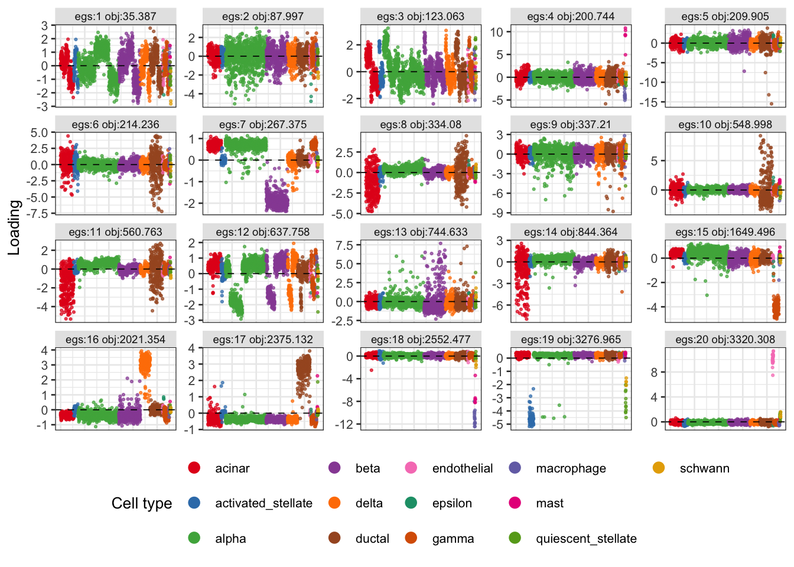
| Version | Author | Date |
|---|---|---|
| 943b6e3 | Matthew Stephens | 2026-08-24 |
And follow up without orthogonalization. Noting here that these results look pretty interesting. In particular, there are several splits (eg 10, 4, 1) that seem to be associated with the order of the cells in the data file, which is almost certainly something real. Maybe it is a sample effect? I need to look at what determines the order of samples in the file.
# Phase 2: full updates — g and tau update AFTER GS to stay in sync
for (iter in seq_len(n_full_gs)) {
for (j in seq_len(r_gs))
fits_rankr_gs[[j]] <- ebproj_update_w(fits_rankr_gs[[j]])
#fits_rankr_gs <- gs_reorth(fits_rankr_gs)
for (j in seq_len(r_gs)) {
fits_rankr_gs[[j]] <- suppressWarnings(ebproj_update_tau(fits_rankr_gs[[j]]))
fits_rankr_gs[[j]] <- ebproj_update_g(fits_rankr_gs[[j]])
}
}
Lhat_rankr_gs <- sapply(fits_rankr_gs, ebproj_calc_x)
obj_rankr_gs <- sapply(fits_rankr_gs, ebproj_objective)
plot_loadings_matrix(Lhat_rankr_gs, label_prefix="egs:",
obj_fn=function(L) obj_rankr_gs,
si=sample_info)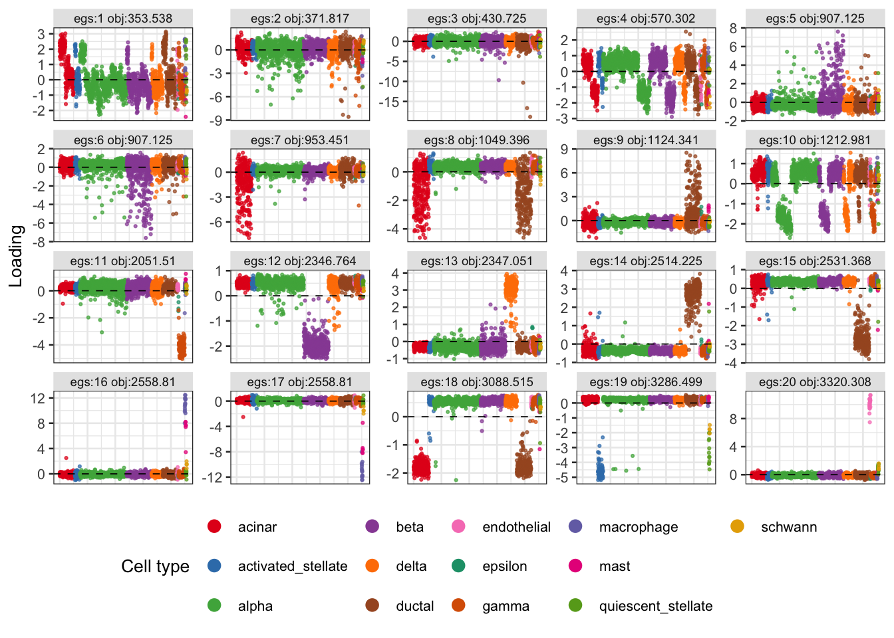
| Version | Author | Date |
|---|---|---|
| f6ed698 | Matthew Stephens | 2026-08-25 |
Closer look at GS loadings 1, 4, 10 — colored by sample
Loadings 1, 4, and 10 show structure that may reflect sample (batch/donor) effects rather than cell type. Here I re-plot them colored by two sample-level groupings derived from sample_info$id (format D28-1_74): the part before _ (donor + batch, e.g. D28-1) and the part before - (donor only, e.g. D28).
# Columns 1, 4, 10 in the plot are ordered by increasing objective,
# so recover the actual column indices from that ordering
comp_idx <- order(obj_rankr_gs)[c(1, 4, 10)]
donor_batch <- sub("_.*", "", sample_info$id) # e.g. "D28-1"
donor <- sub("-.*", "", sample_info$id) # e.g. "D28"
cell_order <- seq_len(nrow(Lhat_rankr_gs)) # keep original cell order
plot_ranks <- c(1, 4, 10) # positions in the increasing-objective plot order
comp_labels <- paste0("plot pos ", plot_ranks,
" (obj:", round(obj_rankr_gs[comp_idx], 3), ")")
df_gs <- do.call(rbind, lapply(seq_along(comp_idx), function(i) {
k <- comp_idx[i]
data.frame(
rank = cell_order,
loading = Lhat_rankr_gs[cell_order, k],
component = comp_labels[i],
donor_batch = donor_batch[cell_order],
donor = donor[cell_order]
)
}))
df_gs$component <- factor(df_gs$component, levels = comp_labels)
p_batch <- ggplot(df_gs, aes(x=rank, y=loading, color=donor_batch)) +
geom_point(size=0.5, alpha=0.7) +
geom_hline(yintercept=0, linetype="dashed", linewidth=0.3) +
facet_wrap(~ component, ncol=3, scales="free_y") +
labs(title="GS loadings by donor+batch (before _)",
x=NULL, y="Loading", color="Donor+batch") +
theme_bw(base_size=10) +
theme(axis.text.x=element_blank(), axis.ticks.x=element_blank(),
legend.position="bottom",
legend.key.size=unit(1, "lines")) +
guides(color=guide_legend(override.aes=list(size=3, alpha=1)))
print(p_batch)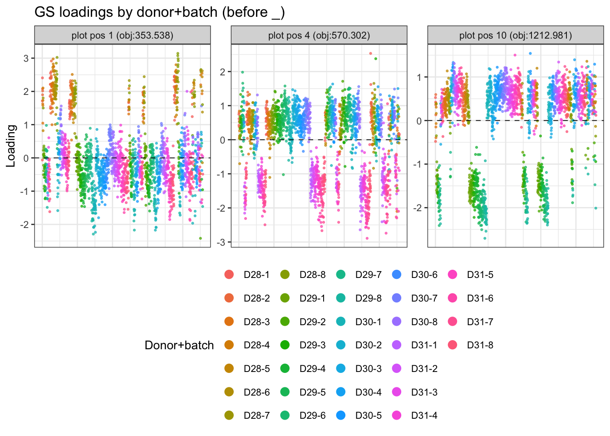
| Version | Author | Date |
|---|---|---|
| f6ed698 | Matthew Stephens | 2026-08-25 |
p_donor <- ggplot(df_gs, aes(x=rank, y=loading, color=donor)) +
geom_point(size=0.5, alpha=0.7) +
geom_hline(yintercept=0, linetype="dashed", linewidth=0.3) +
facet_wrap(~ component, ncol=3, scales="free_y") +
labs(title="GS loadings by donor (before -)",
x=NULL, y="Loading", color="Donor") +
theme_bw(base_size=10) +
theme(axis.text.x=element_blank(), axis.ticks.x=element_blank(),
legend.position="bottom",
legend.key.size=unit(1, "lines")) +
guides(color=guide_legend(override.aes=list(size=3, alpha=1)))
print(p_donor)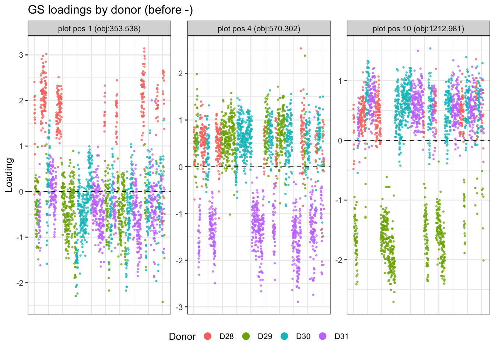
| Version | Author | Date |
|---|---|---|
| f6ed698 | Matthew Stephens | 2026-08-25 |
EBproj rank-r leaky Gram-Schmidt (beta=0.5)
Same three-phase structure as the GS version, but with a leaky projection: \[w_j \leftarrow w_j - \beta \sum_{i=1}^{j-1} (v_j^\top v_i)\, v_i, \qquad v = \sqrt{n}\,w\] With \(\beta=1\) this is standard GS; with \(\beta < 1\) components are only partially deflated against the already-processed ones, relaxing the strict orthogonality constraint and allowing components to share some direction when that is supported by the data.
set.seed(1)
beta_lgs <- 0.5
r_lgs <- 20
n_warmup_lgs <- 50
n_full_lgs <- 100
fits_rankr_lgs <- lapply(seq_len(r_lgs), function(j)
ebproj_init(U_eb, b=b_eb, c=c_golden, sigma2=c_golden))
lgs_reorth <- function(fits, beta = 0.5) {
n <- fits[[1]]$n
objs <- sapply(fits, ebproj_objective)
ord <- order(objs, decreasing = TRUE)
V <- sqrt(n) * sapply(fits, `[[`, "w") # k x r, unit-norm cols
V <- V[, ord, drop = FALSE]
for (j in seq_len(ncol(V))) {
if (j > 1)
for (l in seq_len(j - 1))
V[, j] <- V[, j] - beta * sum(V[, j] * V[, l]) * V[, l]
nrm <- sqrt(sum(V[, j]^2))
if (nrm > 1e-10) V[, j] <- V[, j] / nrm
}
for (j in seq_len(length(fits)))
fits[[ord[j]]]$w <- V[, j] / sqrt(n)
fits
}
# Phase 0: gradient (no Hessian), fix tau
for (iter in seq_len(n_warmup_lgs)) {
for (j in seq_len(r_lgs))
fits_rankr_lgs[[j]] <- ebproj_update_w(fits_rankr_lgs[[j]], hessian="none")
fits_rankr_lgs <- lgs_reorth(fits_rankr_lgs, beta=beta_lgs)
for (j in seq_len(r_lgs))
fits_rankr_lgs[[j]] <- ebproj_update_g0(fits_rankr_lgs[[j]])
}
# Phase 1: Newton, fix tau
for (iter in seq_len(n_warmup_lgs)) {
for (j in seq_len(r_lgs))
fits_rankr_lgs[[j]] <- ebproj_update_w(fits_rankr_lgs[[j]])
fits_rankr_lgs <- lgs_reorth(fits_rankr_lgs, beta=beta_lgs)
for (j in seq_len(r_lgs))
fits_rankr_lgs[[j]] <- ebproj_update_g0(fits_rankr_lgs[[j]])
}
# Phase 2: full updates — g and tau update AFTER leaky GS to stay in sync
for (iter in seq_len(n_full_lgs)) {
for (j in seq_len(r_lgs))
fits_rankr_lgs[[j]] <- ebproj_update_w(fits_rankr_lgs[[j]])
fits_rankr_lgs <- lgs_reorth(fits_rankr_lgs, beta=beta_lgs)
for (j in seq_len(r_lgs)) {
fits_rankr_lgs[[j]] <- suppressWarnings(ebproj_update_tau(fits_rankr_lgs[[j]]))
fits_rankr_lgs[[j]] <- ebproj_update_g(fits_rankr_lgs[[j]])
}
}
Lhat_rankr_lgs <- sapply(fits_rankr_lgs, ebproj_calc_x)
obj_rankr_lgs <- sapply(fits_rankr_lgs, ebproj_objective)
plot_loadings_matrix(Lhat_rankr_lgs, label_prefix="elgs:",
obj_fn=function(L) obj_rankr_lgs,
si=sample_info)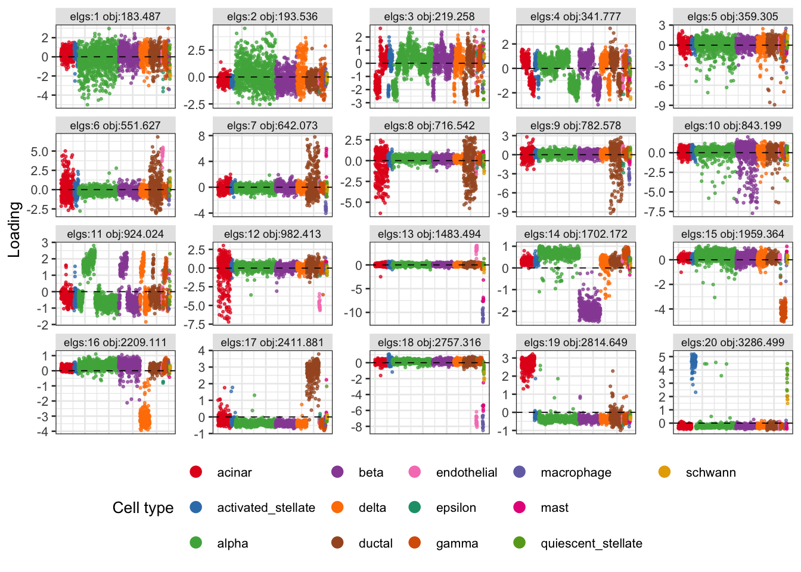
| Version | Author | Date |
|---|---|---|
| 943b6e3 | Matthew Stephens | 2026-08-24 |
EBproj GS initialized from top-20 goldenplus solutions (1000 starts)
Rather than random initializations, here I first run 1000 independent goldenplus fits, select the 20 with the highest objective values, and use those as the starting points for the leaky Gram-Schmidt orthogonalization. The idea is that the 20 best independent solutions likely cover a diverse and high-quality set of directions; the leaky GS then encourages them to spread out without forcing strict orthogonality. First impression is that these results don’t look as good as interleaving the GS updates.
r_lgs_gp <- 20
beta_lgs_gp <- 0.5
n_full_lgp <- 100
# Top-20 clustered goldenplus representatives by objective
kept_objs <- obj_gp[Lhat_gp.pc$kept_indices]
top20_idx <- Lhat_gp.pc$kept_indices[order(kept_objs, decreasing=TRUE)[seq_len(r_lgs_gp)]]
fits_lgs_gp <- fits_gp[top20_idx]
# Phase 2 only: full updates with leaky GS (good init means no warm-up needed)
for (iter in seq_len(n_full_lgp)) {
for (j in seq_len(r_lgs_gp))
fits_lgs_gp[[j]] <- ebproj_update_w(fits_lgs_gp[[j]])
fits_lgs_gp <- lgs_reorth(fits_lgs_gp, beta=beta_lgs_gp)
for (j in seq_len(r_lgs_gp)) {
fits_lgs_gp[[j]] <- suppressWarnings(ebproj_update_tau(fits_lgs_gp[[j]]))
fits_lgs_gp[[j]] <- ebproj_update_g(fits_lgs_gp[[j]])
}
}
Lhat_lgs_gp <- sapply(fits_lgs_gp, ebproj_calc_x)
obj_lgs_gp <- sapply(fits_lgs_gp, ebproj_objective)
plot_loadings_matrix(Lhat_lgs_gp, label_prefix="elgs_gp:",
obj_fn=function(L) obj_lgs_gp,
si=sample_info)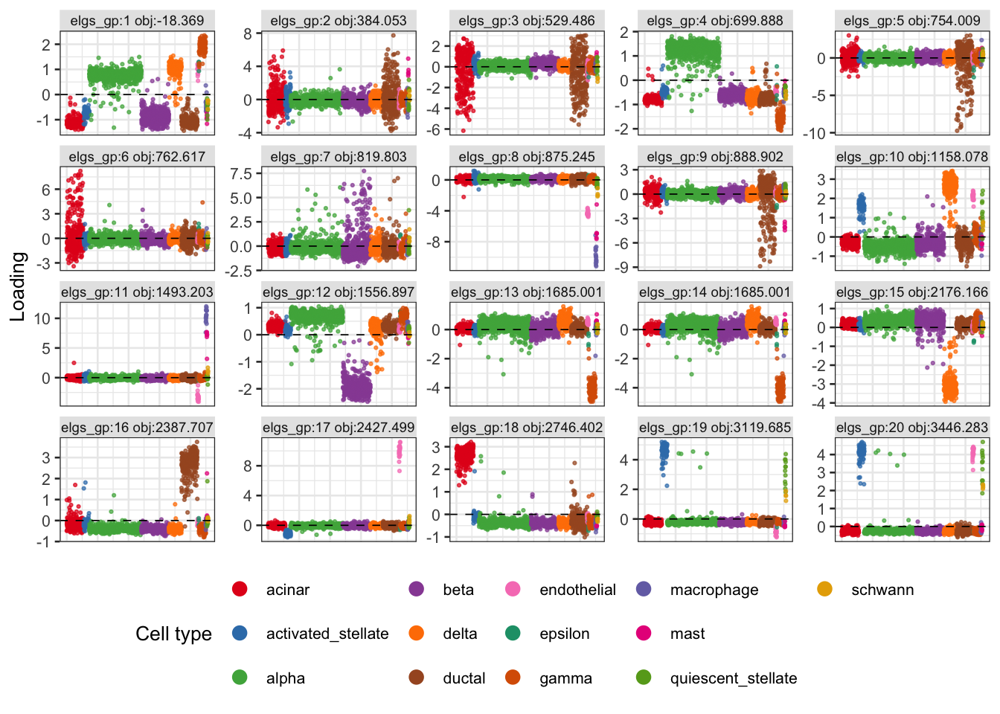
| Version | Author | Date |
|---|---|---|
| 943b6e3 | Matthew Stephens | 2026-08-24 |
EBproj initialized from cell type labels
Here I initialize EBproj from binary (0/1) cell type indicator vectors, analogous to the “Initialize from known celltypes: binary” section above. For each cell type I project its indicator column into the whitened space to get a starting \(w\), then run the two-stage EBproj fit.
X_bin_ct <- model.matrix(~ sample_info$celltype - 1) # n x n_celltypes
X_bin_ct <- X_bin_ct[, colSums(X_bin_ct) > 0, drop=FALSE] # drop empty levels
n_ct <- ncol(X_bin_ct)
fits_ct <- vector("list", n_ct)
for (j in seq_len(n_ct)) {
w_init <- t(U_eb) %*% X_bin_ct[, j]
fit.init <- ebproj_init(U_eb, b=b_eb, c=c_golden, sigma2=c_golden, w=w_init)
fit_golden <- suppressWarnings(ebproj_fit(fit.init, fix_tau=TRUE, g_update="g0", max_iter=200))
fits_ct[[j]] <- suppressWarnings(ebproj_fit(fit_golden, max_iter=200))
}
Lhat_ct_eb <- sapply(fits_ct, ebproj_calc_x)
obj_ct_eb <- sapply(fits_ct, `[[`, "objective")
colnames(Lhat_ct_eb) <- colnames(X_bin_ct)
ct_labels <- gsub("sample_info\\$celltype", "", colnames(X_bin_ct))
plot_loadings_matrix(Lhat_ct_eb,
obj_fn=function(L) obj_ct_eb,
labels=ct_labels,
si=sample_info)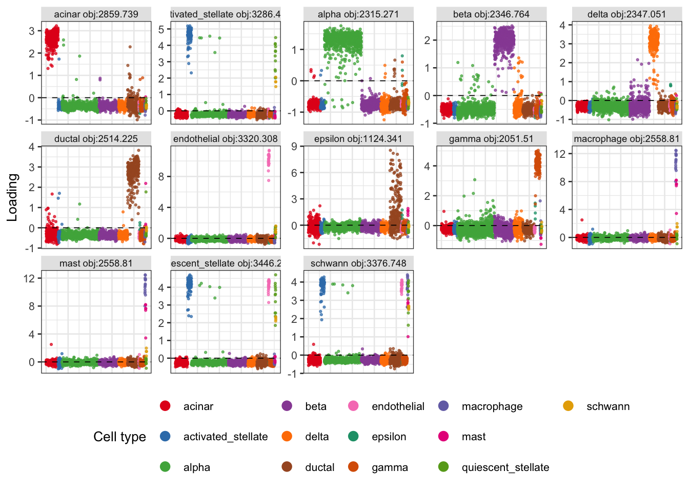
| Version | Author | Date |
|---|---|---|
| eb26677 | Matthew Stephens | 2026-08-23 |
This was old code, running it to cluster genes and looking how consistent the programs are from the two runs. While there is some consistency, there do not seem to be as many consistent programs as with semi-nmf (eg not as many with abs correlation >0.5). Note that, unlike with semi-nmf, the programs will not necessarily have a consistent sign.
#fit.ica.k40 = fastICA(t(Y), n.comp=40)
#fit.ica.k40.1 = fastICA(t(Y[subset,]), n.comp = 40)
#fit.ica.k40.2 = fastICA(t(Y[-subset,]), n.comp = 40)
#session_info <- sessionInfo()
#save(list = c("fit.snmf.k40","fit.snmf.k40.1","fit.snmf.k40.2","session_info"),
# file = "../output/pancreas_celseq2_snmf_k40.RData")
# cormat <- cor(fit.ica.k40.1$S,fit.ica.k40.2$S)
# apply(abs(cormat),1, max)
# hist(cormat,nclass=100)
# image(abs(cormat)>0.5)
# assignment_problem <- RcppHungarian::HungarianSolver(-1*abs(cormat))
# pairings <- assignment_problem$pairs
# image(abs(cormat)[pairings[,1], pairings[,2]])
sessionInfo()R version 4.4.2 (2024-10-31)
Platform: aarch64-apple-darwin20
Running under: macOS 26.5.2
Matrix products: default
BLAS: /System/Library/Frameworks/Accelerate.framework/Versions/A/Frameworks/vecLib.framework/Versions/A/libBLAS.dylib
LAPACK: /Library/Frameworks/R.framework/Versions/4.4-arm64/Resources/lib/libRlapack.dylib; LAPACK version 3.12.0
locale:
[1] C
time zone: America/Chicago
tzcode source: internal
attached base packages:
[1] stats graphics grDevices utils datasets methods base
other attached packages:
[1] caret_7.0-1 lattice_0.22-9 ggplot2_4.0.2 Matrix_1.7-4 fastICA_1.2-7
loaded via a namespace (and not attached):
[1] tidyselect_1.2.1 timeDate_4052.112 dplyr_1.2.0
[4] farver_2.1.2 S7_0.2.1 fastmap_1.2.0
[7] pROC_1.19.0.1 promises_1.5.0 digest_0.6.39
[10] rpart_4.1.24 timechange_0.4.0 lifecycle_1.0.5
[13] survival_3.8-6 MatrixExtra_0.1.15 magrittr_2.0.4
[16] compiler_4.4.2 rlang_1.1.7 sass_0.4.10
[19] tools_4.4.2 yaml_2.3.12 data.table_1.18.2.1
[22] knitr_1.51 labeling_0.4.3 plyr_1.8.9
[25] RColorBrewer_1.1-3 workflowr_1.7.2 withr_3.0.2
[28] purrr_1.2.1 stats4_4.4.2 nnet_7.3-20
[31] grid_4.4.2 git2r_0.36.2 future_1.69.0
[34] globals_0.19.0 scales_1.4.0 iterators_1.0.14
[37] MASS_7.3-65 cli_3.6.5 rmarkdown_2.30
[40] generics_0.1.4 otel_0.2.0 future.apply_1.20.2
[43] reshape2_1.4.5 cachem_1.1.0 stringr_1.6.0
[46] splines_4.4.2 parallel_4.4.2 vctrs_0.7.2
[49] hardhat_1.4.2 jsonlite_2.0.0 listenv_0.10.0
[52] foreach_1.5.2 gower_1.0.2 jquerylib_0.1.4
[55] recipes_1.3.1 glue_1.8.0 parallelly_1.46.1
[58] codetools_0.2-20 lubridate_1.9.5 stringi_1.8.7
[61] gtable_0.3.6 later_1.4.6 tibble_3.3.1
[64] pillar_1.11.1 htmltools_0.5.9 ipred_0.9-15
[67] float_0.3-3 lava_1.8.2 R6_2.6.1
[70] rprojroot_2.1.1 evaluate_1.0.5 RhpcBLASctl_0.23-42
[73] httpuv_1.6.16 bslib_0.10.0 class_7.3-23
[76] Rcpp_1.1.1 nlme_3.1-168 prodlim_2026.03.11
[79] whisker_0.4.1 xfun_0.56 ModelMetrics_1.2.2.2
[82] fs_1.6.6 pkgconfig_2.0.3